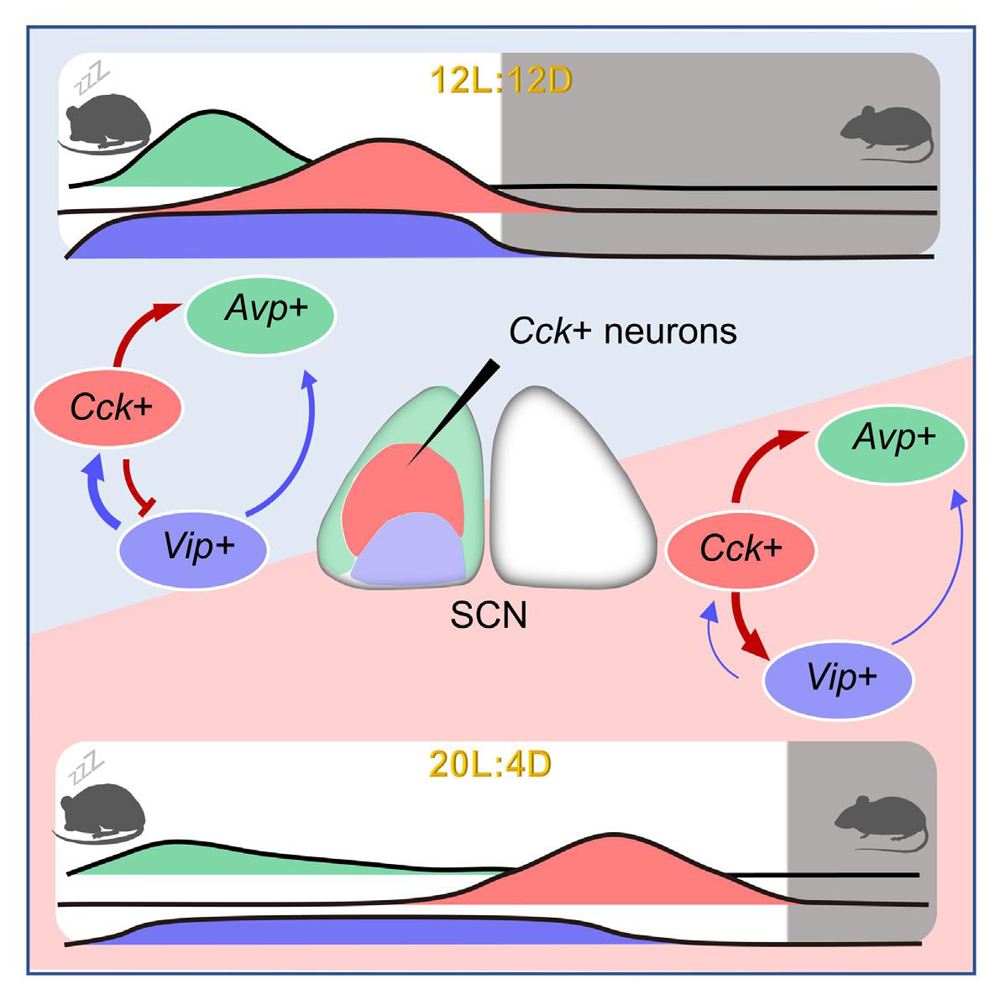
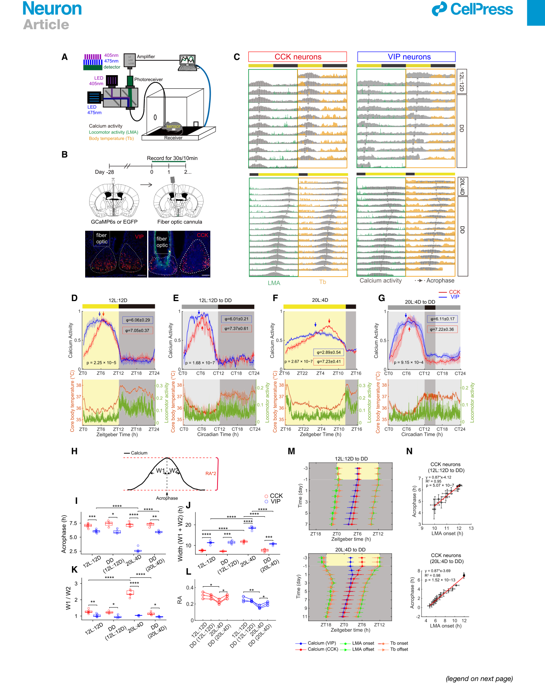
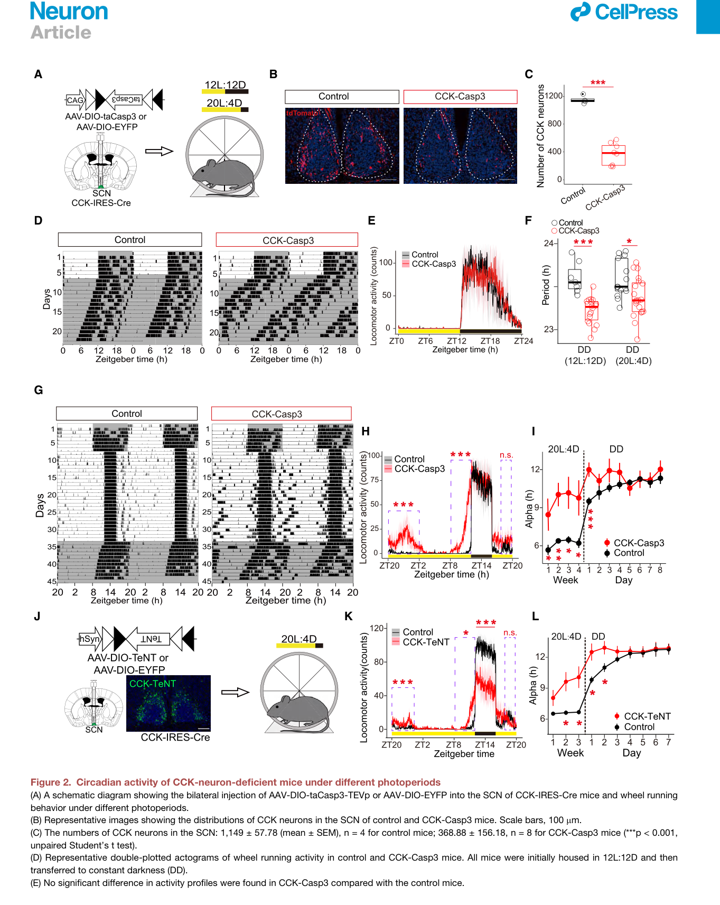
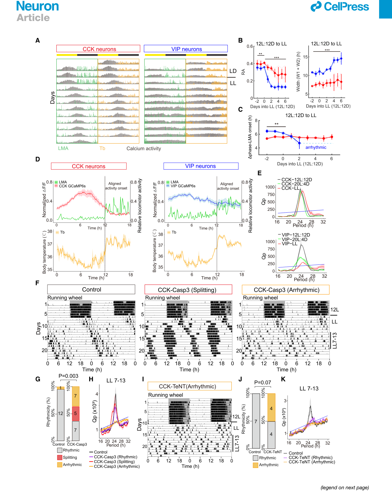
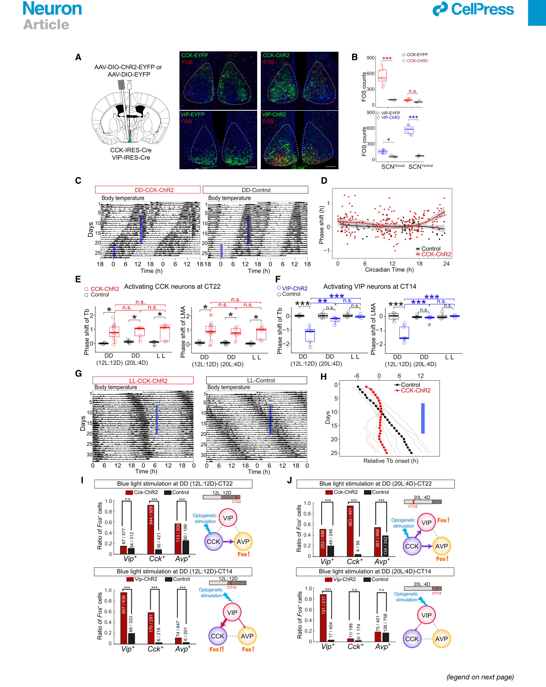
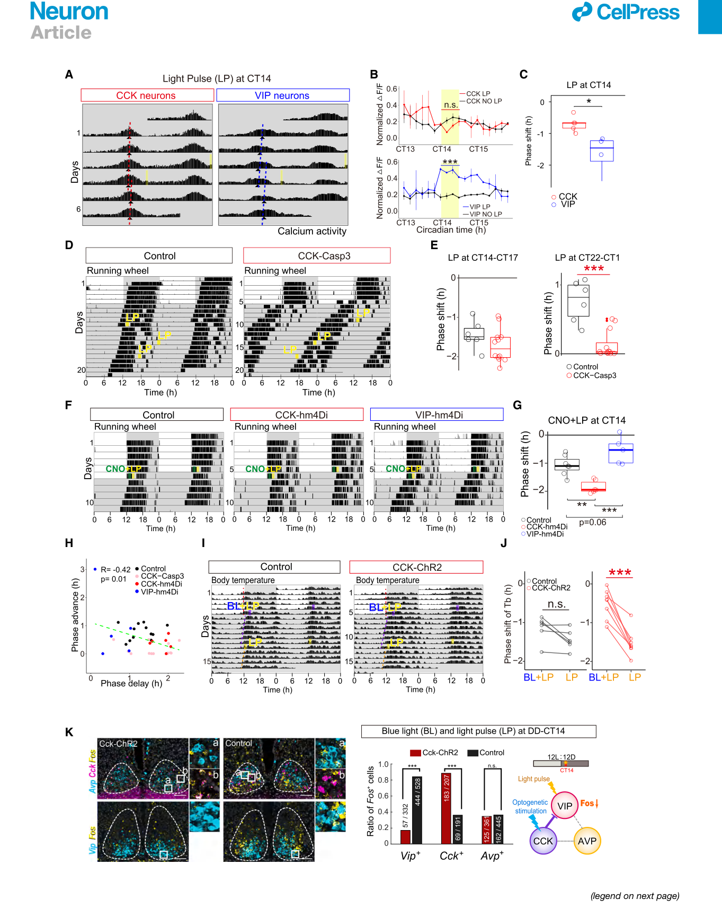
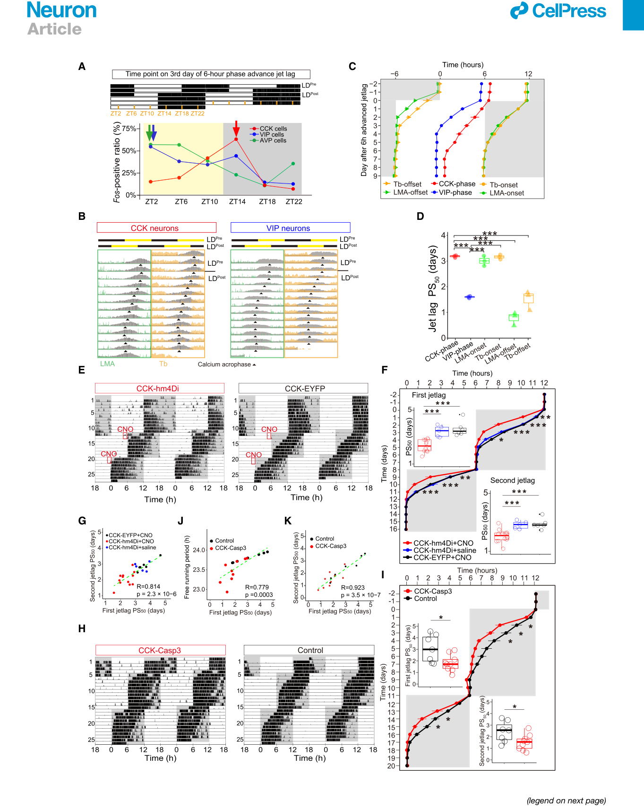

小鼠视交叉上核中的胆囊收缩素神经元调控生物钟的稳健性
00 图文摘要与研究要点 (Graphical Abstract & Highlights)

左侧（常规周期 12L:12D）：CCK 神经元位于视交叉上核 (suprachiasmatic nucleus, SCN) 背侧前外壳区，在光暗交替（黄昏）前活性上升并精准预测活动起始时间。VIP 神经元（腹侧）接收光输入介导相位延迟，CCK 对其施加负反馈抑制；AVP 神经元（背侧）在黎明对齐，三者共同形成网络耦合平衡。
右侧（极端长光周期 20L:4D）：VIP 神经元光反应与节律显著耗竭；CCK 神经元节律依然保持，且从抑制转为激活 VIP 神经元，维系 SCN 网络耦合，防止节律崩溃与行为分裂。
研究亮点 (Highlights)
-
SCN CCK 神经元的神经活性追踪昼夜节律行为活动的起始
Activities of SCN CCK neurons track the onset of circadian behavioral activities在不同光周期下，CCK 神经元的钙活动峰值始终稳定出现在小鼠夜间运动和体温升高前约 5 小时，充当活动起始的内在定时器。 -
SCN CCK 神经元在长光周期下协调昼夜节律活动
SCN CCK neurons coordinate the circadian activities under long photoperiods特异性消融或沉默 CCK 神经元会导致小鼠在长日照（20L:4D）下活动时间异常延长（无法正常压缩活动区间），并在恒光（LL）下迅速发生行为分裂或节律丧失。 -
SCN CCK 神经元在光授时通路中与 VIP 神经元相互作用
SCN CCK neurons interact with VIP neurons in the light entrainment pathwayCCK 神经元不直接感光，但激活 CCK 神经元可诱导相位前移，并在初夜通过负反馈抑制 VIP 神经元激活，从而对冲和门控光诱发的相位延迟。 -
SCN CCK 神经元调控时差的恢复速度
SCN CCK neurons regulate the recovery rate of jet lagCCK 神经元对光暗周期的骤变响应较慢，其储存的“旧时区记忆”构成了时差适应迟缓的神经基础；在时差早期特异性化学遗传抑制 CCK 神经元能够显著加速时差恢复。
简要介绍 (In Brief)
哺乳动物中央昼夜节律生物钟位于视交叉上核 (SCN)，由多种神经元亚型组成。Xie 等人揭示了一个包含胆囊收缩素 (cholecystokinin, CCK) 神经元的神经环路，该环路为昼夜节律活动的起始计时，并在长日照光周期以及时差中的相位转移过程中调控昼夜节律行为。
01 摘要 (Summary)
视交叉上核（suprachiasmatic nucleus, SCN，哺乳动物下丘脑控制全身昼夜节律的主起搏器）能够在不同环境下使哺乳动物产生稳健的昼夜节律行为（circadian behaviors，生物体内约 24 小时的周期性生理与行为活动），但其潜在的神经机制仍不清楚。
在此，我们证明小鼠 SCN 中胆囊收缩素（cholecystokinin, CCK，一种经典的多肽类神经调质）神经元的活动在不同光周期（photoperiods，一昼夜中光照与黑暗的比例）下均先于行为活动的起始（onset of behavioral activities）。
CCK 神经元缺陷的小鼠表现出游离运转周期（free-running periods，在无外界时间线索如恒黑条件下的内源生物节律周期，常记作 $\tau$）缩短，在长光周期（long photoperiod，如 20 小时光照: 4 小时黑暗）下无法压缩其活动时间，并在持续光照（constant light, LL）下迅速出现行为分裂（splitting，原为一个整体的夜间活动段分裂为两个独立的、运转周期不同的游离组分）或变为心律失常/节律丧失（arrhythmic）。
此外，与血管活性肠肽（vasoactive intestinal polypeptide, VIP，SCN 腹侧接收视网膜直接光输入的核心神经肽）神经元不同，CCK 神经元不直接感光（not directly light sensitive），但它们的激活能够引发相位前移（phase advance，生物钟时间提前），并抵消由 VIP 神经元介导的光诱导相位后移（phase delay，生物钟时间推迟）。
在长光周期下，CCK 神经元对 SCN 的影响超过了 VIP 神经元。最后，我们发现反应迟缓的 CCK 神经元控制着时差（jet lag，生物体内源钟与新外界光暗周期失步的生理状态）过程中的恢复速度。
总之，我们的结果表明，SCN CCK 神经元对于哺乳动物昼夜节律生物钟的稳健性（robustness，系统抵抗外界扰动保持节律稳定的能力）和可塑性（plasticity，系统适应季节日长及环境骤变的可变性）至关重要。
The suprachiasmatic nucleus (SCN) can generate robust circadian behaviors in mammals under different environments, but the underlying neural mechanisms remained unclear. Here, we showed that the activities of cholecystokinin (CCK) neurons in the mouse SCN preceded the onset of behavioral activities under different photoperiods. CCK-neuron-deficient mice displayed shortened free-running periods, failed to compress their activities under a long photoperiod, and developed rapid splitting or became arrhythmic under constant light. Furthermore, unlike vasoactive intestinal polypeptide (VIP) neurons, CCK neurons are not directly light sensitive, but their activation can elicit phase advance and counter light-induced phase delay mediated by VIP neurons. Under long photoperiods, the impact of CCK neurons on SCN dominates over that of VIP neurons. Finally, we found that the slow-responding CCK neurons control the rate of recovery during jet lag. Together, our results demonstrated that SCN CCK neurons are crucial for the robustness and plasticity of the mammalian circadian clock.
02 引言 (Introduction)
内源性昼夜节律生物钟（endogenous circadian clock）驱动着各类不同生物体广泛生理过程与日常行为的昼夜振荡。在分子水平上，昼夜节律是由负向转录-翻译反馈回路（negative transcription-translation feedback loops, TTFLs）所产生的，在哺乳动物中该回路主要由核心时钟基因组成，如 Per1/2/3（周期蛋白基因，Period）、Cry1/2（隐花色素蛋白基因，Cryptochrome）、Bmal1（脑和肌肉组织芳香烃受体核转位蛋白类似蛋白1，Brain and Muscle Arnt-Like 1）以及 Clock（昼夜节律运动输出周期蛋白基因，Circadian Locomotor Output Cycles Kaput）1。尽管绝大多数单个细胞本身都拥有分子生物钟，但动物外显的昼夜节律行为活动是由外部环境线索进行授时引带的（entrained by the external environmental cues）。光照一直被认为是影响昼夜节律的最关键环境因素。生物钟被 24 小时光照-黑暗循环所授时（entrained by 24-h light-dark cycles），但在外界环境的季节性变化下仍能持续发挥功能。因此，生物钟的稳健性（robustness）和可塑性（plasticity）对于动物的生存至关重要。大多数动物的昼夜节律活动呈现双峰分布（bimodal distribution），即分别与黎明（dawn）和黄昏（dusk）对齐的两个活动段（activity bouts）2。昼夜节律行为的季节性适应体现在长光周期和短光周期下对这两个活动段的动态调节中。在持续光照（constant light, LL）的长期作用下，动物的活动节律会逐渐分裂为两个独立的游离运转组分（two free-running components）。基于这些观察，Pittendrigh 与 Daan 提出了著名的双振荡器模型，即分别由彼此独立但又相互耦合的“傍晚振荡器”（evening [E] oscillator）和“早晨振荡器”（morning [M] oscillator）控制这两个活动段3。该模型预测：E 振荡器和 M 振荡器拥有不同的内源游离运转周期，对光刺激表现出不同的响应，并且它们的相位差会根据白天长度（日照时长）发生改变，从而为生物钟对季节变化的编码提供了理论基础。在果蝇（Drosophila）中，E 和 M 振荡器已被鉴定为特定的生物钟神经元亚群，它们各自能够在不同的光暗条件下主导昼夜节律系统4,5。然而，在哺乳动物中，究竟是由简单的 E 和 M 振荡器还是由一个由相互耦合的振荡器构成的复杂神经网络来驱动 E 和 M 昼夜节律行为并控制季节可塑性，目前仍不明确6。
渊源与预测：1976 年，现代时间生物学奠基人 Colin Pittendrigh 与 Serge Daan 观察到夜行性啮齿类动物在由光暗周期转入持续光照 (LL) 下时，原本连续的夜间活动会发生“行为分裂 (behavioral splitting)”，分裂出两个周期不同、逐渐错开的自主运动峰。据此他们提出，生物钟内部至少存在两个基本振荡器：M 振荡器（对齐早晨黎明 Dawn，控制活动结束 offset，倾向于被光加速/周期较短）；E 振荡器（对齐傍晚黄昏 Dusk，控制活动开始 onset，倾向于被光减速/周期较长）。随季节日照长度变化，两者之间的相位差（phase relationship）动态伸缩，从而使动物感知昼夜长短（季节光周期编码）。几十年来，科学家一直在哺乳动物 SCN 中寻找 E 和 M 振荡器对应的细胞实体。
视交叉上核（suprachiasmatic nucleus, SCN，位于哺乳动物下丘脑视交叉上方的一对微小核团），由约 20,000 个细胞组成，被公认为是哺乳动物的主昼夜节律起搏器（master circadian pacemaker）7。光照信息通过内源性光敏视网膜神经节细胞（intrinsically photosensitive retinal ganglion cells, ipRGCs，视网膜中表达黑视素 melanopsin 的特殊光受体细胞）投射进入 SCN，而 SCN 内部的细胞间耦合（inter-cellular coupling）对于产生高度同步化的神经振荡以主导下游生理和行为节律至关重要8。以往对 SCN 的研究主要集中在释放神经肽的神经元上，包括位于 SCN 腹侧和核心区（ventral and core regions）的血管活性肠肽（vasoactive intestinal polypeptide, VIP）神经元和胃泌素释放肽（gastrin-releasing peptide, GRP）神经元，以及位于 SCN 背侧外壳区（dorsal shell region）的精氨酸加压素（arginine vasopressin, AVP）神经元。现有观点认为，VIP 神经元接收来自视网膜的直接输入，在光授时通路中的相位重置（phase resetting in the light entrainment pathway）以及细胞间昼夜节律钟的同步化中发挥关键作用9–12，而 AVP 神经元则被证明对 SCN 神经网络内部的细胞间耦合非常重要13–15。据报道，神经肽表达状态的转换（neuropeptide switching）参与了哺乳动物的光周期现象（photoperiodism）16。与此同时，神经递质 GABA（γ-氨基丁酸，γ-aminobutyric acid）也被认为与 SCN 的季节可塑性相关17–21。由于几乎所有的 SCN 神经元都是 GABA 能神经元（GABAergic neurons），目前尚不清楚究竟是哪种 SCN 神经元亚型对生物钟的季节可塑性做出了贡献。在以往对脑片 SCN 的研究中，位于 SCN 不同亚区的神经元所表达的 Per2 荧光素酶（Per2 luciferase reporter）已被证明在不同的相位振荡17,22。暴露于长日照光周期和持续光照（LL）下会增加它们的相位离散度（phase dispersion），并削弱 SCN 神经元之间的细胞间耦合23,24。然而，这些具有不同振荡相位的细胞的分子身份（identities）及其潜在的神经机制仍属未知。我们近期利用单细胞 RNA 测序（single-cell RNA sequencing, scRNA-seq）和脑组织透明化成像（tissue-cleared imaging）的研究表明，SCN 神经元可以划分为 Avp+/Nms+、Vip+/Nms+、Cck+/C1ql3+、Grp+/Vip+ 以及 Cck+/Bdnf+ 等不同亚型25。这些神经元亚型表现出截然不同的昼夜节律基因表达模式与光响应特性，并占据着 SCN 内部不同的空间位置。与 VIP 和 AVP 神经元相比，胆囊收缩素（cholecystokinin, CCK）神经元的时钟基因表达呈现出明显的相位延迟（delayed phase）。此外，CCK 神经元高度富集在 SCN 的前外壳区（anterior shell region），而此前该区域被认为是 E 时钟细胞（E clock cells）所在的部位22。迄今为止，SCN 中 CCK 神经元的昼夜节律功能仍属未知。
Core（核心区 / 腹侧）：靠近视交叉，富含 VIP 和 GRP 神经元，主要接收视网膜 ipRGCs 的谷氨酸能/PACAP 能直接光输入，感光能力强但细胞内源节律较弱。
Shell（外壳区 / 背侧及前侧）：包绕腹侧核心区，富含 AVP 和 CCK 神经元。细胞具有强内源自主节律性，通过神经肽（如 AVP）和 GABA 能连接与 Core 互作，负责维持节律同步性与下游输出。
在本研究中，通过对自由活动动物进行长期的体内钙信号活性（in vivo calcium activity）和行为活动监测，我们发现：在不同光周期下，SCN CCK 神经元的钙活动峰值始终出现在行为活动起始之前；而 VIP 神经元的钙活动在长光周期下则分散弥漫在整个光照期。在持续光照（LL）条件下，CCK 神经元的钙活动仍保持周期性振荡，而 VIP 神经元则完全丧失了节律性。特异性消融或破坏 CCK 神经元导致游离运转周期明显缩短，并在长光周期和持续光照（LL）下出现昼夜节律行为的不稳定。此外，我们发现虽然 CCK 神经元不直接对光刺激敏感，但激活 CCK 神经元能够使生物钟产生相位前移（phase-advance），并有效抵消光诱导的相位后移效应，从而在长光周期下稳定生物钟。在长光周期下，VIP 神经元对 SCN 神经网络的影响显著减弱，而 CCK 神经元的影响则得到明显强化。最后，我们发现 CCK 神经元活性对光暗周期的骤然改变反应极其缓慢，其调整速率显著慢于 VIP 神经元，并且在模拟时差实验中抑制 CCK 神经元能够显著缩短时差恢复所需的时间。综上所述，我们的研究揭示了小鼠 SCN CCK 神经元为昼夜节律生物钟提供了所必需的稳健性（robustness）和可塑性（plasticity）。
The endogenous circadian clock drives daily oscillations of a wide range of physiological processes and behaviors in diverse organisms. At the molecular level, circadian rhythm is generated by the negative transcription-translation feedback loops (TTFLs) consisting of core clock genes such as Per1/2/3, Cry1/2, Bmal1, and Clock in mammals.1 Although most individual cells possess the circadian clock, the overt circadian activities of animals are entrained by the external environmental cues. Light has been considered the most important environmental factor influencing circadian rhythm. The circadian clock is entrained by 24-h light-dark cycles but continues to function under seasonal changes in environment. Thus, the robustness and plasticity of circadian clocks is crucial for animal survival. The circadian activities in most animals show a bimodal distribution, with two activity bouts aligned to the dawn and dusk, respectively.2 The seasonal adaptation of circadian behaviors is manifested by the adjustment of these two activity bouts under long and short photoperiods. Under the prolonged period of constant light (LL), animal activity can gradually split into two free-running components. Based on these observations, Pittendrigh and Daan proposed that two separate but coupled oscillators, namely the evening (E) and morning (M) oscillators, control these two activity bouts, respectively.3 This model predicts that E and M oscillators have different free-running periods, show different responses to light stimulus, and that their phase difference changes according to the day’s length, thus providing a basis for seasonal encoding of the circadian clock. In Drosophila, E and M oscillators have been identified as the specific subsets of clock neurons each of which can dominate the circadian system under different light-dark conditions.4,5 However, it is still unclear whether simple E and M oscillators or a network of coupled oscillators are responsible for driving the E and M circadian behaviors and controlling the seasonal plasticity in mammals.6
The suprachiasmatic nucleus (SCN), consisting of ~20,000 cells, has been known as the master circadian pacemaker in mammals.7 Light information enters the SCN from intrinsically photosensitive retinal ganglion cells (ipRGCs), and the inter-cellular coupling within the SCN is critical for generating synchronized oscillations to govern downstream behaviors.8 Past studies of the SCN have mainly focused on neuropeptide-releasing neurons, including vasoactive intestinal polypeptide (VIP) and gastrin-releasing peptide (GRP) neurons in the ventral and core regions of the SCN and arginine vasopressin (AVP) neurons in the dorsal shell region of the SCN. It was suggested that VIP neurons receive direct retinal input and are important for phase resetting in the light entrainment pathway and synchronization of cellular circadian clocks,9–12 while AVP neurons have also been shown to be important for inter-cellular coupling within the SCN network.13–15 Neuropeptide switching has been reported to contribute to photoperiodism in mammals.16 Meanwhile, neurotransmitter GABA has been implicated in the seasonal plasticity of the SCN.17–21 As almost all SCN neurons are GABAergic, it is also unclear which subtypes of SCN neurons contribute to the seasonal plasticity of the circadian clock. In previous studies of the SCN on brain slices, Per2 luciferase expression of neurons located at different SCN subregions has been shown to oscillate at different phases.17,22 The exposure to long-day photoperiods and LL can increase their phase dispersion and weaken inter-cellular coupling among SCN neurons.23,24 However, the identities of these differentially phased cells and the underlying mechanism remained unknown. Our recent study using single-cell RNA sequencing (scRNA-seq) and tissue-cleared imaging has suggested that SCN neurons can be divided into Avp+/Nms+, Vip+/Nms+, Cck+/C1ql3+, Grp+/Vip+, and Cck+/Bdnf+ subtypes.25 These neuronal subtypes display distinct circadian gene expression and light responsiveness and occupy different spatial locations in the SCN. Compared with VIP and AVP neurons, cholecystokinin (CCK) neurons showed a delayed phase of circadian clock gene expression. Furthermore, CCK neurons are enriched in the anterior shell region of the SCN, where E clock cells were thought to be located.22 So far, the circadian functions of CCK neurons in the SCN are still unclear.
In this study, by monitoring in vivo calcium activity and behavioral activities in free-moving animals, we found that the calcium activities of SCN CCK neurons peaked before the activity onset under different photoperiods, while those of VIP neurons were spread over the entire light phase under a long-day photoperiod. Under LL, the calcium activities of CCK neurons remained oscillating, while those of VIP neurons lost rhythmicity. CCK neuron deficiency led to the shortening of the free-running period and the instability of circadian behaviors—specifically under long-day photoperiods and LL. Furthermore, we found that although CCK neurons are not directly light sensitive, the activation of CCK neurons can phase-advance the circadian clock and counter the phase delaying effect of light, thereby stabilizing the circadian clock under long-day photoperiods. The impact of VIP neurons on the SCN network was significantly weakened, while that of CCK neurons was strengthened in long-day photoperiods. Finally, we found that the response of CCK neuronal activity to the sudden change in the light-dark cycle is significantly slower than that of VIP neurons, and the inhibition of CCK neurons can significantly shorten the time of recovery in jet lag. In summary, we revealed that SCN CCK neurons confer the robustness and plasticity needed for the circadian clock in mice.
03 结果 1：SCN CCK 神经元的活动追踪昼夜节律行为活动的起始
我们首先通过在自由活动（free-moving）的小鼠体内进行长期活体光纤记录（in vivo fiber photometry），检测了 SCN CCK 神经元与 VIP 神经元的自发钙活动（spontaneous calcium activities）。实验中，我们将编码 GCaMP6s（一种敏感的基因编码钙指示蛋白）的腺相关病毒载体（adeno-associated virus, AAV：AAV-EF1a-DIO-GCaMP6s-P2A-nls-tdTomato）注射至 CCK-Cre 和 VIP-Cre 小鼠的 SCN 中，并同时监测它们自主运动活动（locomotor activity, LMA）和核心体温（body temperature, Tb）（Figure 1A）。CCK-Cre 小鼠中表达 tdTomato 的细胞主要位于前侧 SCN 的外壳区（shell region of anterior SCN），而 VIP-Cre 小鼠中的阳性细胞则主要位于后侧 SCN 的腹侧区（ventral region of the posterior SCN），这与先前报道的 CCK 和 VIP 神经元在 SCN 中的特定空间分布一致25（Figures 1B 和 S1A）。
在 12 小时光照: 12 小时黑暗（12L:12D，常规光暗周期）条件下，我们发现 SCN CCK 神经元的活体自发钙活动呈现出昼夜节律振荡，其峰值出现在授时时间 ZT7.05 ± 0.37（Zeitgeber time，ZT；将开灯时间设为 ZT0，关灯时间设为 ZT12），比关灯时（ZT12）自主运动开始及核心体温上升的时间大约提前了 5 小时（Figures 1C, 1D, 和 1I）。相比之下，SCN VIP 神经元在整个白天期间均维持高水平的钙活动，这与之前的研究报道相一致26。CCK 神经元与 VIP 神经元的钙活动波形存在极其显著的差异（$p = 2.25 \times 10^{-5}$，Kolmogorov-Smirnov 检验）。我们测量了它们钙活动峰在上升相（rising phase, W1）和下降相（declining phase, W2）的半峰全宽（half widths），发现与 VIP 神经元相比，CCK 神经元的钙活动波形在总半高宽（total half-width, W1 + W2）上更窄，而在不对称比值（W1/W2）上更加不对称（Figures 1J 和 1K）。VIP 神经元的活性峰值出现在 ZT6.06 ± 0.29 左右，早于 CCK 神经元的峰值时间（Figure 1I）。光纤植入位点和被感染 CCK 神经元的数量并未对 SCN CCK 神经元的每日钙活动轮廓产生显著影响（Figures S1A 和 S1B）。当小鼠从 12L:12D 释放进入恒定黑暗（constant dark, DD）条件时，CCK 和 VIP 神经元的昼夜节律钙活动与自主运动及核心体温节律一同进入游离运转（free run），在此期间 CCK 神经元与 VIP 神经元钙活动波形的差异性特征得以维持（Figures 1C, 1E, 和 1M）。
授时时间 (Zeitgeber Time, ZT)：环境外源时间标尺。在常规 12L:12D 中，ZT0 为亮灯 (Lights-on)，ZT12 为熄灯 (Lights-off)。
昼夜节律时间 / 主观时间 (Circadian Time, CT)：内源生物钟的主观时间标尺（常用于恒暗 DD 或恒光 LL 下）。CT0 代表主观白天的开始，CT12 代表主观夜间的开始（对应夜行性啮齿类动物活动开始 onset）。
峰值相位 (Acrophase, $\phi$)：利用余弦函数拟合昼夜振荡波形时，振荡达到最高峰所对应的相位时间点。
波形参数 (W1, W2, RA)：W1 为上升期半高宽，W2 为下降期半高宽；RA 为相对振幅 (Relative Amplitude)，反映节律波动剧烈程度。
已知长日照光周期会增加 SCN 神经元之间的相位离散度（phase dispersion），而释放入 DD 则会促使其重新同步化（resynchronization）17,21。随后，我们测量了长日照光周期（20L:4D，20 小时光照: 4 小时黑暗）下 CCK 和 VIP 神经元的钙活动（Figures 1C, 1F, 和 S1C）。在 20L:4D 下，VIP 神经元的钙活动峰值出现在 ZT2.42 ± 0.25（关灯被定义为 ZT12），该时间点再次位于活动开始（onset）与活动结束（offset）的中点，导致其相对于活动起始时间的相位差显著增大（$\Delta$ phase-onset；Figures 1I, 1F, 和 S2A–S2D）。VIP 神经元的每日钙活动曲线在白天显著展宽，表现出振荡相对振幅（relative amplitude, RA）下降以及在长光周期下基线水平升高（Figures 1L 和 S2E）。具体而言，VIP 神经元在 20L:4D 下表现出钙活动的对称性延伸，与 12L:12D 相比总半高宽增加（Figures 1J, S2F, 和 S2G）。在 CCK 神经元中，其钙活动振荡的 RA 亦有所下降，但下降幅度要小得多，且与 12L:12D 相比，20L:4D 下钙活动的基线水平没有显著差异（Figures 1L 和 S2H）。在 20L:4D 条件下，CCK 神经元的钙活动在白天前半段缓慢上升并在 ZT7.33 ± 0.49 达到峰值，依然处于小鼠自主运动开始和体温升高前约 5 小时（Figures 1C, 1G, 1M, S2C, 和 S2D）。CCK 神经元在 20L:4D 下表现出钙活动不对称性（W1/W2）的增加（Figure 1K），这是由于 W1 增加而 W2 保持不变所致（Figure S2B）。从 20L:4D 释放进入 DD 后，相位领先的 VIP 神经元的钙活动峰值发生短暂后缩（retracted），而相位落后的 CCK 神经元的峰值发生前移（advanced），直至 VIP 神经元与 CCK 神经元之间的相位关系重新恢复至类似于 12L:12D 下的状态，表明在重新同步化的过程中 VIP 与 CCK 神经元之间存在相互作用（Figures 1I 和 1M）。在此过程中，行为活动结束时间发生回缩，活动开始时间发生前移，而 CCK 神经元的钙峰值始终与行为活动开始时间保持相位锁定（phase-locked with activity onset time），VIP 神经元的钙峰值则始终与活动开始和结束的中点时间保持相位锁定（Figures 1M, 1N, 和 S2I–S2K）。
此外，我们通过使用单分子荧光原位杂交（single-molecule fluorescence in situ hybridization, smFISH）技术，将神经元活性标志物 Fos 与 Avp、Vip 和 Cck 共同荧光标记，检测了在 12L:12D 诱导后处于 DD 中或处于 20L:4D 下的小鼠 SCN VIP、CCK 和 AVP 神经元在一天中不同时间点的 Fos 表达（Figures S3A 和 S3D）。我们发现，在 12L:12D 下，Avp+ 神经元的 Fos 表达在 CT3（昼夜节律时间，Circadian time）达到峰值，Vip+ 神经元在 CT6 达到峰值，而 Cck+ 神经元在 CT9 达到峰值（Figure S3B）。在 20L:4D 下，smFISH 分析表明，相对于开灯时间而言，Cck+ 神经元中的 Fos 表达因长日照条件而发生了相位延迟，但与关灯时间始终保持相位锁定（Figure S3E）。与此相反，Avp+ 神经元中的 Fos 表达相对于关灯时间发生相位前移，但与开灯时间保持相位锁定。在 Vip+ 神经元中，白天的 Fos 表达依然高于夜间，但在 20L:4D 下 Fos 表达昼夜节律的相对振幅（RA）降低，且 Fos 表达的基线水平升高。我们发现，CCK 神经元和 VIP 神经元中的 Fos 表达振荡与其各自的钙活动节律处于相同的相位（Figures S3C 和 S3F），并且从 12L:12D 转变为 20L:4D 时经历了相似的定量变化（Figures S3G 和 S3H）。综上所述，SCN CCK 神经元的钙活动和 Fos 表达均与关灯时间保持紧密的相位锁定，能够在不同光周期下精准预示昼夜节律行为活动的起始。

Figure 1 图注详细逐项翻译：
(A) 在自由活动小鼠中利用光纤记录（fiber photometry）对 SCN 钙信号（GCaMP6s）进行长期体内记录，并同时记录小鼠核心体温（Tb）和自主运动活性（LMA）的实验示意图。
(B) 光纤记录实验时间线（上图）以及显示位于 SCN 上方的光纤套管位置的代表性脑片图像（下图）。标尺：100 μm。
(C) 在 12L:12D 转入恒定黑暗（DD）（上图）或 20L:4D 转入恒定黑暗（DD）（下图）的自主活动记录图（actogram）中，SCN CCK 与 VIP 神经元体内 GCaMP6s 信号（灰色）的代表性曲线图，叠加了自主运动活性（LMA，绿色）和核心体温（Tb，橙色）。
(D) 12L:12D 条件下（LD1–3 天）SCN CCK（红色，$\phi = \text{ZT}7.05 \pm 0.37$）和 VIP（蓝色，$\phi = \text{ZT}6.06 \pm 0.29$）神经元体内 GCaMP6s 信号的平均昼夜变化轮廓。$\phi$（峰值相位，acrophase）表示预测的峰值或昼夜节律相位。底部展示了 12L:12D 下 Tb（橙色）和 LMA（绿色）的平均日曲线。$p$ 值表示 SCN CCK 与 VIP 神经元 GCaMP 信号曲线之间的 Kolmogorov-Smirnov 检验结果；均值 $\pm$ SEM；CCK, $n = 6$；VIP, $n = 6$。
(E) 从 12L:12D 释放进入 DD（DD1–3 天）小鼠 SCN CCK（红色，$\phi = \text{CT}7.37 \pm 0.61$）和 VIP（蓝色，$\phi = \text{CT}6.01 \pm 0.21$）神经元体内 GCaMP6 信号的平均昼夜节律轮廓。同 (D)；CCK, $n = 3$；VIP, $n = 4$。
(F) 20L:4D 条件下（LD1–3 天）SCN CCK（红色，$\phi = \text{ZT}7.23 \pm 0.41$）和 VIP（蓝色，$\phi = \text{ZT}2.89 \pm 0.54$）神经元体内 GCaMP6 信号的平均昼夜变化轮廓。同 (D)；CCK, $n = 5$；VIP, $n = 5$。
(G) 从 20L:4D 释放进入 DD（DD7–9 天）小鼠 SCN CCK（红色，$\phi = \text{CT}7.22 \pm 0.36$）和 VIP（蓝色，$\phi = \text{CT}6.11 \pm 0.17$）神经元体内 GCaMP6 信号的平均昼夜节律轮廓。同 (D)；CCK, $n = 4$；VIP, $n = 4$。
(H) 示意图说明如何通过相对振幅（RA）、上升相半高宽（W1）、下降相半高宽（W2）以及预测的峰值相位或昼夜节律相位（$\phi$, acrophase）来表征钙信号的波形特征。
(I) 12L:12D、12L:12D 转入 DD、20L:4D 以及 20L:4D 转入 DD 条件下 SCN CCK（红色）和 VIP（蓝色）神经元 GCaMP6s 信号峰值相位（$\phi$）的差异（通过双因素方差分析及 Tukey 事后检验：****$p < 0.0001$, ***$p < 0.001$, **$p < 0.01$, *$p < 0.05$）。各条件下使用的动物数量：12L:12D（CCK, $n = 6$；VIP, $n = 6$），12L:12D 转 DD（CCK, $n = 3$；VIP, $n = 4$），20L:4D（CCK, $n = 5$；VIP, $n = 5$），以及 20L:4D 转 DD（CCK, $n = 4$；VIP, $n = 4$）。
(J) 12L:12D、12L:12D 转入 DD、20L:4D 以及 20L:4D 转入 DD 条件下 SCN CCK（红色）和 VIP（蓝色）神经元 GCaMP6s 信号总半高宽（W1 + W2）的差异（通过双因素方差分析及 Tukey 事后检验：****$p < 0.0001$, ***$p < 0.001$）。使用动物数量同 (I)。
(K) 12L:12D、12L:12D 转入 DD、20L:4D 以及 20L:4D 转入 DD 条件下 SCN CCK（红色）和 VIP（蓝色）神经元 GCaMP6s 信号 W1 与 W2 比值的差异（通过双因素方差分析及 Tukey 事后检验：****$p < 0.0001$, **$p < 0.01$, *$p < 0.05$）。使用动物数量同 (I)。
(L) 同一小鼠在 12L:12D、12L:12D 转 DD、20L:4D 以及 20L:4D 转 DD 条件下 SCN CCK（红色）和 VIP（蓝色）神经元 GCaMP6s 信号相对振幅（RA）的差异（配对 t 检验：**$p < 0.01$, *$p < 0.05$）。CCK, $n = 3$；VIP, $n = 3$。
(M) 从 12L:12D 释放进入 DD（上图）以及从 20L:4D 释放进入 DD（下图）过程中，SCN CCK（红色）和 VIP（蓝色）神经元 GCaMP6s 信号峰值相位、LMA 开始与结束时间（绿色）、Tb 开始与升高时间（橙色）的轨迹图。12L:12D 转 DD：CCK, $n = 3$；VIP, $n = 3$；20L:4D 转 DD：CCK, $n = 4$；VIP, $n = 4$。
(N) 从 12L:12D 转入 DD（上图，Pearson 相关，$R^2 = 0.95$, $p = 5.07 \times 10^{-7}$）以及从 20L:4D 转入 DD（下图，Pearson 相关，$R^2 = 0.98$, $p = 1.52 \times 10^{-13}$）期间，SCN CCK 神经元 GCaMP6s 信号的峰值相位与自主运动（LMA）开始时间之间的线性相关关系。12L:12D 转 DD：CCK, $n = 3$；20L:4D 转 DD：CCK, $n = 4$。
04 结果 2：CCK 神经元在长光周期下调控昼夜节律活动
接下来，我们利用表达 Caspase-3（半胱天冬酶-3，促凋亡蛋白酶）的 AAV 特异性消融 SCN CCK 神经元，以研究 CCK 神经元在昼夜节律行为调控中的功能。我们将编码 Cre 依赖型 taCasp3（AAV-DIO-taCasp3）或对照荧光蛋白（AAV-DIO-EYFP）的 AAV 双侧立体定位注射到 CCK-Cre 小鼠的 SCN 中（Figure 2A）。注射 4 周后，我们测定了 SCN CCK 神经元缺失小鼠（CCK-Casp3）的自主跑轮活动（wheel running activities）的昼夜节律。注射导致 SCN 中 CCK 神经元数量极显著减少（对照组，$n = 1,149 \pm 57.78$ 个；CCK 神经元消融组，$n = 368.88 \pm 156.18$ 个）（Figures 2B 和 2C）。我们发现，在 12L:12D 条件下，CCK-Casp3 小鼠的跑轮活动曲线与对照小鼠相比没有显著差异（Figures 2D, 2E, 和 S4A; Data S1）。然而，当从小鼠 12L:12D 条件释放进入恒暗（DD）环境后，CCK-Casp3 小鼠表现出显著缩短的游离运转周期（$\tau = 23.22 \pm 0.04$ h），相比之下对照小鼠周期为（$\tau = 23.6 \pm 0.07$ h）（Figure 2F）。
taCasp3 (转座工程化半胱天冬酶3)：在缺乏特异性促凋亡信号时仍具有酶活性的重组 Caspase-3，在 Cre 重组酶介导下特异性诱发目标神经元发生凋亡消融（ablated）。本实验中 CCK 阳性神经元减少约 70%。
TeNT (破伤风毒素轻链，Tetanus toxin light chain)：能够特异性酶切突触小泡结合蛋白 synaptobrevin/VAMP2，从而彻底阻断神经递质从突触前膜的胞吐释放（silencing），但不引起细胞死亡。用于区分“完全破坏神经元环路”与“仅阻断化学递质传递”。
随后，我们检测了 CCK-Casp3 小鼠在长日照（20L:4D）条件下的跑轮活动。在如此长的白昼条件下，正常对照小鼠的活动持续时长（activity durations, alpha，$\alpha$）被高度压缩，活动开始时间（activity onset）非常靠近活动结束时间（activity offset）。有趣的是，我们发现与对照小鼠相比，消融 SCN CCK 神经元导致 20L:4D 下的活动持续时间（$\alpha$）显著延长（Figure 2G）。具体而言，与对照组相比，CCK-Casp3 小鼠的活动开始时间发生了前移（advanced onset），而活动结束时间发生了后移（delayed offset）（Figures 2H 和 S4E）。CCK-Casp3 小鼠似乎无法在长日照条件下将其活动开始引带对齐于关灯时间，亦无法将其活动结束引带对齐于开灯时间。总体而言，CCK-Casp3 小鼠表现出节律性下降，在 20L:4D 下饲养至第 4 周时，22 只实验动物中有 2 只甚至完全丧失了节律性（节律丧失型 CCK-Casp3 小鼠）（Figures S4C 和 S4D）。一旦释放进入 DD，对照小鼠被压缩的活动区间会缓慢解压缩（decompressed），恢复到与 12L:12D 下相当的水平，这与 SCN 在季节变化下表现出的昼夜授时可塑性观点高度吻合。相反，CCK-Casp3 小鼠则从原本就未能充分压缩的活动模式中，表现出异常快速的活动模式恢复（Figure 2I）。在 20L:4D 下变为无节律的 CCK-Casp3 小鼠在进入 DD 后依然维持无节律状态。而保持节律的 CCK-Casp3 小鼠在 DD 下再次表现出显著缩短的游离运转周期（$\tau = 23.38 \pm 0.05$ h），对照组为（$\tau = 23.58 \pm 0.06$ h）（Figure 2F; Data S1）。
此外，我们通过 AAV 介导表达破伤风毒素（tetanus toxins, CCK-TeNT）特异性阻断 SCN CCK 神经元的神经递质释放，检测了其在 20L:4D 下的行为改变（Figures 2J 和 S4J）。类似地，我们发现 CCK-TeNT 小鼠在 20L:4D 下的活动持续时间同样缺乏充分压缩（Figures 2K 和 S4F），并且在释放入 DD 后相比对照小鼠呈现更快速的解压缩（Figures 2L 和 S4I; Data S1）。在 DD 条件下，CCK-TeNT 小鼠的游离运转周期与野生型（WT）小鼠相比没有显著差异（Figures S4G 和 S4H）。综合上述结果，在长日照光周期下，SCN CCK 神经元功能受损的动物其昼夜节律活动表现出明显减弱的季节性可塑性。

Figure 2 图注详细逐项翻译：
(A) 在 CCK-IRES-Cre 小鼠 SCN 中双侧注射 AAV-DIO-taCasp3-TEVp 或 AAV-DIO-EYFP 以及在不同光周期下检测跑轮行为的实验示意图。
(B) 对照组与 CCK-Casp3 小鼠 SCN 中 CCK 神经元空间分布的代表性图像。标尺：100 μm。
(C) SCN 中 CCK 神经元的数量：对照小鼠为 $1,149 \pm 57.78$（均值 $\pm$ SEM），$n = 4$；CCK-Casp3 小鼠为 $368.88 \pm 156.18$，$n = 8$（***$p < 0.001$，非配对 Student's t 检验）。
(D) 对照组和 CCK-Casp3 小鼠跑轮活动的代表性双重绘制自主活动记录图（double-plotted actograms）。所有小鼠最初饲养在 12L:12D 条件下，随后转入恒定黑暗（DD）。
(E) 与对照组小鼠相比，CCK-Casp3 小鼠的日活动轮廓未见显著差异。
(F) CCK-Casp3 小鼠的游离运转周期显著缩短。从 12L:12D 引带后转 DD：对照小鼠为 $23.6 \pm 0.07$ h，$n = 7$；CCK-Casp3 小鼠为 $23.22 \pm 0.04$ h，$n = 18$。从 20L:4D 引带后转 DD：对照小鼠为 $23.58 \pm 0.06$ h，$n = 13$；CCK-Casp3 小鼠为 $23.38 \pm 0.05$ h，$n = 20$（*$p = 0.038$, ***$p < 0.001$，双因素方差分析及 Scheffe 事后检验）。
(G) 对照小鼠和 CCK-Casp3 小鼠跑轮活动的代表性双重绘制自主活动记录图。所有小鼠最初饲养在 12L:12D 下，随后转入 20L:4D，最终释放进入恒定黑暗（DD）。
(H) 在 20L:4D 下，CCK-Casp3 小鼠的活动轮廓表现出活动开始时间提前且活动结束时间推迟（***$p < 0.001$，双因素方差分析）。对照小鼠，$n = 13$；CCK-Casp3 小鼠，$n = 20$。
(I) 在 20L:4D 条件下，CCK-Casp3 小鼠的活动持续时长（alpha，$\alpha$）较对照小鼠显著延长（*$p < 0.05$, **$p < 0.01$, ***$p < 0.001$，双因素方差分析及 Tukey 事后检验）。误差棒代表 SEM。实验动物数量同 (H)。
(J) 在 CCK-IRES-Cre 小鼠 SCN 双侧注射 AAV-DIO-TeNT 或 AAV-DIO-EYFP 以及在 20L:4D 下记录跑轮行为的示意图。标尺：100 μm。
(K) CCK-TeNT 小鼠在 20L:4D 下的活动曲线显示活动开始提前而结束推迟（*$p < 0.05$; ***$p < 0.001$; n.s. 表示无显著性差异，$p > 0.05$，双因素方差分析）。对照小鼠，$n = 7$；CCK-TeNT 小鼠，$n = 8$。
(L) 在 20L:4D 下，CCK-TeNT 小鼠的活动持续时长（alpha，$\alpha$）较对照小鼠显著延长（*$p < 0.05$, **$p < 0.01$, ***$p < 0.001$，双因素方差分析及 Tukey 事后检验）。误差棒代表 SEM。实验动物数量同 (K)。
05 结果 3：CCK 神经元是维持持续光照下昼夜节律活动所必需的
我们测量了持续光照（constant light, LL）条件下动物 SCN 中 VIP 和 CCK 神经元的体内钙活动，并同步记录了自主运动活性和核心体温（Figure 3A）。我们发现，进入 LL 后，VIP 神经元的钙节律迅速衰减（rapidly dampened），表现为相对振幅（RA）降低和峰宽显著展宽，这与先前的报道一致26（Figure 3B）。然而，CCK 神经元钙节律的 RA 虽然也有所下降，但随后维持在一个稳定的水平，并且在进入 LL 后 CCK 神经元的峰宽保持恒定（Figure 3B）。CCK 神经元的钙活动表现为周期长于 24 小时的游离运转昼夜节律。在 LL 条件下，CCK 神经元的钙活动峰值再次与小鼠自主运动活动的开始及核心体温的升高保持紧密的相位锁定（Figures 3C 和 3D）。我们发现，CCK 神经元钙活动的节律性保持高度稳定，而 VIP 神经元的节律性则从 12L:12D 到 20L:4D 逐渐下降，并在 LL 下完全丧失（Figure 3E）。
持续光照 (Constant Light, LL) 的破坏力：光作为哺乳动物最强大的授时因子，持续存在会引起视网膜持续兴奋，破坏 SCN 神经元间的相互抑制/兴奋平衡，导致神经元脱同步。大部分夜行性动物在强 LL 下周期逐渐延长，进而出现节律紊乱或丧失。
行为分裂 (Behavioral Splitting)：动物的夜间活动原本表现为一个整体（单峰主周期），但在长期 LL 下，活动段分裂成两个独立的、各自游离运转的成分（通常为一个较短周期组分和一个较长周期组分），直到两者相隔约 180 度反相振荡。这是证明哺乳动物 SCN 内部存在两个可解离振荡器（E/M 双振荡器）的经典生理学表型。
接下来，我们测试了 CCK 神经元缺陷小鼠在 LL 条件下的跑轮活动。我们发现，26.3% 的 CCK-Casp3 小鼠出现了行为分裂（behavioral splitting），在 LL 下平均 4.8 天内，一个短周期组分（$22.68 \pm 0.12$ h）从长周期组分（$24.41 \pm 0.33$ h）中显现分裂出来（Figures 3F, S5A, 和 S5C; Data S1）。此外，有 36.8% 的 CCK-Casp3 小鼠在从 12L:12D 转入 LL 后立即完全丧失了节律性（变为心律失常/无节律，arrhythmic）（Figures 3F, 3G, 和 3H; Data S1）。相比之下，对照小鼠的跑轮活动在整个实验过程中从未发生分裂，且在 LL 下仅有一只动物变为无节律（Figures 3G 和 S5B）。类似地，我们发现有 50% 的 CCK-TeNT 小鼠在 LL 条件下跑轮活动迅速变得无节律（Figures 3I–3K, S5E, 和 S5F; Data S1）。因此，我们的结果表明，CCK 神经元在 LL 下能够持续维持节律性，且对于在持续光照条件下维持昼夜节律行为活动是必不可少的。

Figure 3 图注详细逐项翻译：
(A) 代表性自主活动记录图，显示从小鼠从 12L:12D 进入 LL 时，SCN CCK 与 VIP 神经元体内 GCaMP6 信号（灰色，双重绘制）叠加自主运动活性（LMA，绿色）和核心体温（Tb，橙色）。
(B) 小鼠从 12L:12D 进入 LL 后，SCN CCK（红色）和 VIP（蓝色）神经元 GCaMP6 信号相对振幅（RA）和总峰宽（W1 + W2）的动态变化（双因素方差分析及 Tukey 事后检验：**$p < 0.01$, ***$p < 0.001$）。CCK, $n = 3$；VIP, $n = 2$。误差棒代表 SEM。
(C) 小鼠从 12L:12D 进入 LL 后，SCN CCK（红色）和 VIP（蓝色）神经元 GCaMP6 信号与活动起始相位差（$\Delta$ phase-LMA onset：LMA 开始时间相对于峰值相位的差值）的动态变化（***$p < 0.001$，双因素方差分析及 Tukey 事后检验）。CCK, $n = 2$；VIP, $n = 2$。误差棒代表 SEM。
(D) LL 条件下 SCN CCK（红色）和 VIP（蓝色）神经元钙信号的平均昼夜节律曲线，活动开始时间已对齐（虚线）。CCK, $n = 2$；VIP, $n = 2$。
(E) 在 12L:12D（黑色）、20L:4D（绿色）和 LL（红色）条件下，SCN CCK（上图）和 VIP（下图）神经元钙信号的平均周期图（periodograms）。12L:12D：CCK, $n = 6$；VIP, $n = 6$；20L:4D：CCK, $n = 5$；VIP, $n = 5$；LL：CCK, $n = 3$；VIP, $n = 2$。
(F) 从 12L:12D 转入 LL 后对照组和 CCK-Casp3 小鼠跑轮活动的代表性双重绘制自主活动记录图。
(G) 表现出节律性（灰色）、行为分裂（红色）和无节律（橙色）行为的对照组（左）和 CCK-Casp3（右）小鼠的比例和数量（Fisher 确切概率法，$p = 0.003$）。对照小鼠，$n = 13$；CCK-Casp3 小鼠，$n = 19$。
(H) LL 第 7–13 天对照小鼠和 CCK-Casp3 小鼠跑轮活动的平均周期图。实验动物同 (G)。
(I) 从 12L:12D 转入 LL 后对照组和 CCK-TeNT 小鼠跑轮活动的代表性双重绘制自主活动记录图。
(J) 表现为有节律（灰色）和无节律（橙色）行为的对照组（左）和 CCK-TeNT（右）小鼠的比例和数量（Fisher 确切概率法，$p = 0.07$）。对照小鼠，$n = 7$；CCK-TeNT 小鼠，$n = 8$。
(K) LL 第 7–13 天对照小鼠和 CCK-TeNT 小鼠跑轮活动的平均周期图。实验动物同 (J)。
06 结果 4：CCK 神经元激活诱发相位前移
为了探究 CCK 神经元的相位重置能力（phase resetting ability），我们在从 12L:12D 释放进入恒暗（DD）的表达光敏通道蛋白-2（channelrhodopsin 2, ChR2）的 CCK-Cre 和 VIP-Cre 小鼠中，利用光遗传学操纵技术（optogenetic manipulation）刺激了 SCN CCK 和 VIP 神经元（Figure 4A）。我们发现在体内激活 CCK 和 VIP 神经元均增加了 SCN 中 FOS 蛋白的表达。在主观夜间早期 CT14（Circadian Time 14）给予 4 Hz、持续 1 小时的光刺激后，CCK-ChR2 小鼠背侧 SCN 中的 FOS 表达量增加近 4 倍，但腹侧 SCN 与对照组相比未见差异（Figure 4B）。然而，在 VIP-ChR2 小鼠中，背侧和腹侧 SCN 的 FOS 表达均较对照显著增加。与先前文献对 VIP 神经元报道的结果相反10，我们发现每 24 小时重复一次刺激 CCK 神经元无法在 DD 下引带出稳定的 24 小时自主运动和体温节律（Figures 4C 和 S6A）。平均相位反应曲线（phase response curve, PRC）显示，在主观夜间后期和主观白天早期（CT18–CT5），激活 CCK 神经元诱发了显著的相位前移（phase advances）（Figures 4D 和 S6B）。为了进一步证实这一结果，我们测量了在从 12L:12D 转入 DD 的小鼠中，于两个特定昼夜节律时间点（分别为 CT14 和 CT22）对 CCK 或 VIP 神经元进行单次光刺激后的稳定相位转移：我们发现刺激 SCN CCK 神经元可在 CT22 诱发稳定的相位前移，但在 CT14 不引起任何相位后移（phase delay）（Figures S6C 和 S6D）。另一方面，刺激 SCN VIP 神经元则既能在 CT22 诱发稳定的相位前移，又能在 CT14 诱发相位后移（Figures S6C 和 S6D）。因此，刺激 CCK 神经元只能加速生物钟（相位前移），而不能延迟生物钟（相位后移）；而刺激 VIP 神经元则既能延迟生物钟，又能使生物钟前移。
相位反应曲线 (PRC)：记录在生物体内源节律的不同主观时间点给予单一脉冲刺激（如光照或神经刺激）所引起的生物钟相移量（$\Delta \phi$）。
初夜延迟区 (Early Night Delay, CT12-CT16)：给光通常引起相位推迟（Phase Delay），对应夜幕刚降临却看见光，生物钟认为“天还没黑透”，因而后移。
后夜前移区 (Late Night Advance, CT18-CT24)：给光通常引起相位提前（Phase Advance），对应夜色深处看见光，生物钟认为“天快亮了”，因而前移。
主观白天死区 (Subjective Day "Dead Zone", CT0-CT12)：正常状态下在此期间给光，生物钟不产生任何相移。
随后，我们检测了在长光周期（20L:4D）和持续光照（LL）条件下激活 CCK 和 VIP 神经元的相位转移功能。我们发现，在 20L:4D 和 12L:12D 两种条件下，光遗传激活 CCK 神经元均能在 CT22 引发相位前移（Figures 4E, S7A, 和 S7C）。然而，对于经 20L:4D 引带后转入 DD 的小鼠，激活 VIP 神经元在 CT14 引起的相位后移显著小于 12L:12D 引带小鼠在 CT14 的相位后移（Figures 4F, S7B, 和 S7D）。在 LL 条件下，每 24 小时重复激活一次 CCK 神经元能够稳定地引带小鼠的自主运动和体温节律（Figures 4G, 4H, 和 S8C）。在 LL 条件下于 CT14 和 CT22 对 CCK 或 VIP 神经元进行单次刺激进一步证实：唯有在 CT22 激活 CCK 神经元能够在 LL 下产生相位前移，其相移幅度与在 20L:4D 和 12L:12D 的 DD 条件下于 CT22 激活 CCK 神经元所产生的相位前移相当（Figures 4E, S8A, S8B, 和 S8D）。综上所述，无论何种光周期环境，激活 SCN CCK 神经元均能诱发生物钟稳定的相位前移；而刺激 VIP 神经元的相位后移效应在长光周期和持续光照下被显著削弱。
为了分析 CCK 和 VIP 神经元对 SCN 影响的光周期依赖性，我们利用 smFISH 实验检测了 SCN 中 Fos 基因对 CCK 和 VIP 神经元激活的响应。我们发现，在 12L:12D 引带的小鼠中，于 CT22 光遗传刺激 SCN CCK 神经元激活了 AVP 神经元中的 Fos 表达，但并未激活 VIP 神经元（Figures 4I 和 S6E）。在 20L:4D 条件下，我们发现于 CT22 激活 CCK 神经元导致 AVP 神经元中 Fos 表达出现类似程度的增加（Figures 4J, S7E, 和 S7F）。耐人寻味的是，与 12L:12D 下相似的 CCK 激活相比，在 20L:4D 下激活 CCK 神经元还额外引起了 VIP 神经元的激活。相反，在 12L:12D 条件下，于 CT14 刺激 VIP 神经元同时激活了 SCN 中的 CCK 神经元和 AVP 神经元（Figures 4I 和 4J）。然而，在 20L:4D 条件下，于 CT14 激活 VIP 神经元却未能诱导 CCK 或 AVP 神经元中 Fos 的表达（Figures 4J, S7E, 和 S7F）。这些结果与我们的行为学观察高度一致，即在长光周期下，VIP 神经元对 SCN 施加的作用显著被削弱，而 CCK 神经元对 VIP 神经元的影响则明显增强。

Figure 4 图注详细逐项翻译：
(A, B) 在 CCK-IRES-Cre 和 VIP-IRES-Cre 小鼠 SCN 单侧注射 AAV-DIO-ChR2-EYFP 或 AAV-DIO-EYFP 的示意图。代表性图像和定量分析显示光遗传激活 CCK-ChR2 和 VIP-ChR2 神经元增加了 SCN 中的 FOS 蛋白。对照（CCK-EGFP）小鼠，$n = 3$；CCK-ChR2 小鼠，$n = 8$；对照（VIP-EGFP）小鼠，$n = 4$；VIP-ChR2 小鼠，$n = 7$（单因素方差分析及 Scheffe 事后检验：*$p = 0.004$, ***$p < 0.001$；n.s. 表示无显著差异，$p > 0.05$）。
(C) 在 12L:12D 转入 DD 的游离运转小鼠中，每天重复给予 SCN CCK 神经元 1 小时光遗传刺激（蓝条）时体温的代表性双重绘制自主活动记录图。体温标尺在 35°C 至 39°C 之间，颜色越深代表体温越高。
(D) 根据 (A) 中的光遗传刺激计算得到的 CCK-ChR2（红色，$n = 10$）和对照小鼠（黑色，$n = 5$）的平均相位反应曲线（PRC）。计算了刺激后次日的相位转移量。
(E) 不同光周期下光遗传刺激 SCN CCK 神经元在 CT22 引发的 Tb（左）和 LMA（右）相位转移。12L:12D 转 DD：对照小鼠 $n = 4$, CCK-ChR2 小鼠 $n = 11$；20L:4D 转 DD：对照小鼠 $n = 6$, CCK-ChR2 小鼠 $n = 5$；12L:12D 转 LL：对照小鼠 $n = 4$, CCK-ChR2 小鼠 $n = 5$（双因素方差分析及 Scheffe 事后检验：*$p < 0.05$；n.s., $p > 0.05$）。
(F) 不同光周期下光遗传刺激 SCN VIP 神经元在 CT14 引发的 Tb（左）和 LMA（右）相位转移。12L:12D 转 DD：对照 $n = 4$, VIP-ChR2 $n = 5$；20L:4D 转 DD：对照 $n = 4$, VIP-ChR2 $n = 5$；12L:12D 转 LL：对照 $n = 4$, VIP-ChR2 $n = 3$（双因素方差分析及 Scheffe 事后检验：**$p < 0.01$, ***$p < 0.001$；n.s., $p > 0.05$）。
(G) 在 12L:12D 转入 LL 的游离运转小鼠中，每天重复给予 SCN CCK 神经元 1 小时光遗传刺激（蓝条）时体温的代表性双重绘制自主活动记录图。
(H) 每日体温升高起始点显示 (E) 中的每日刺激引带了 CCK-ChR2 小鼠的体温节律，但未引带对照小鼠。对照小鼠，$n = 5$；CCK-ChR2 小鼠，$n = 7$。
(I) 12L:12D 转 DD 条件下在 CT22 给予蓝光刺激后，对照和 CCK-ChR2 小鼠中 Vip、Cck、Avp 阳性细胞中 Fos 阳性细胞比例的定量（左上）（卡方检验：*$p < 0.05$, ***$p < 0.001$；n.s., $p > 0.05$）。该实验中对 SCN 神经元的影响模式图（右上）。12L:12D 转 DD 条件下在 CT14 给予蓝光刺激后，对照和 VIP-ChR2 小鼠中 Vip、Cck、Avp 阳性细胞中 Fos 阳性细胞比例的定量（左下）（卡方检验：*$p < 0.05$, ***$p < 0.001$；n.s., $p > 0.05$）。该实验中对 SCN 神经元的影响模式图（右下）。
(J) 20L:4D 引带后转 DD 条件下，CCK-ChR2 小鼠在 CT22 接受蓝光刺激（上图）以及 VIP-ChR2 小鼠在 CT14 接受蓝光刺激（下图）后的定量结果，同 (I)。
07 结果 5：SCN CCK 神经元抑制光诱导的相位后移
为了探究 CCK 神经元在光授时通路中相比 VIP 神经元的作用，我们首先测量了经 12L:12D 引带后转入恒暗（DD）的小鼠中，CCK 和 VIP 神经元对光脉冲刺激（light pulse, LP）的钙活动响应。我们发现，在 DD 条件下，无论是在主观初夜 CT14 还是在主观后夜 CT22 给予光脉冲，CCK 神经元的钙活动均未表现出即刻的升高反应；而 VIP 神经元在 CT14 受到每次光脉冲刺激时均表现出神经活性的即刻骤升（Figures 5A, 5B, S9A, 和 S9B），这表明 CCK 神经元不直接感光（not directly light sensitive）。然而，在 DD 条件下于 CT14 给予单次光脉冲刺激，会导致光脉冲后次日 CCK 神经元钙活动发生明显的相位后移（Figure 5A）。此外，光脉冲在 CT14 诱发的即刻相移，在 CCK 神经元中显著小于在 VIP 神经元中的幅度（Figure 5C）。综上，CCK 神经元活性对光刺激的这种迟滞响应表明：在光授时通路中，CCK 神经元是通过 VIP 神经元间接受到光照影响的。
经典通路：视网膜 ipRGCs $\rightarrow$ SCN 腹侧 VIP 神经元（光反应极其迅速）$\rightarrow$ 诱发初夜生物钟相位推迟（Phase Delay）。
新发现的 CCK 负反馈闸门：光脉冲激活 VIP 神经元后，激活的信号会缓慢传导至背侧 CCK 神经元；而光遗传同时激活 CCK 神经元，能够显著反向抑制 VIP 神经元中的 Fos 表达，并彻底阻断光引起的相位后移。说明 CCK 神经元在初夜充当了一个抑制性负反馈“刹车门控”，防止生物钟对偶然光照产生过度的相位推迟。
随后，我们测定了 CCK-Casp3 小鼠对光脉冲的相位响应。我们发现，与对照小鼠相比，在主观后夜 CT22 给予单次光脉冲所诱导的相位前移在 CCK-Casp3 小鼠中被完全消除，而在 CT14 给予光脉冲所诱导的相位后移在 CCK-Casp3 小鼠与对照小鼠之间无显著差异（Figures 5D 和 5E）。这一结果表明，CCK 神经元是光照在 CT22 诱发生位前移所必需的。此外，我们发现 CCK-Casp3 小鼠的负掩蔽效应（negative masking，指突然暴露于强光下夜行性啮齿动物自发运动立即被直接抑制的行为反射）与对照小鼠相比没有差异（Figure S9H）。接下来，我们采用化学遗传学（chemogenetic）策略：在 SCN 双侧注射编码 Cre 依赖型抑制性 Gi 偶联受体（AAV-hSyn-DIO-hM4D(Gi)-EGFP）或对照荧光蛋白的 CCK-Cre 小鼠中，在光照暴露前 1 小时特异性瞬时抑制 CCK 神经元活性。我们发现，通过腹腔注射氯氮平-N-氧化物（clozapine-N-oxide, CNO）抑制 CCK 神经元，显著放大了光照在 CT14 引起的相位后移（Figures 5F 和 5G）。相反，通过 CNO 抑制 VIP 神经元则仅能减小光照在 CT14 诱发的相位后移（Figures 5F 和 5G），但对 CT22 光诱发的相位前移没有显著影响（Figures S9F 和 S9G）。单用 CNO 对 CCK 或 VIP 神经元进行化学遗传抑制本身在 CT14 并未引起任何显著的相位转移（Figures S9D 和 S9E）。整合所有检测光诱导相位转移的实验动物数据，我们观察到 CT14 的相位后移量与 CT22 的相位前移量之间存在显著的负相关。特别是，消融或抑制 CCK 神经元往往会增加光诱导的相位后移并减少相位前移，而抑制 VIP 神经元则产生完全相反的效应（Figure 5H）。最后，在 CT14 给予光脉冲的同时对 CCK 神经元进行同步光遗传学刺激，能够完全消除光引起的相位后移（Figures 5I, 5J, S9I, 和 S9J）。smFISH 实验显示，与仅在 CT14 接受光照的小鼠 SCN 相比，在 CT14 同时刺激 CCK 神经元与给予光照显著降低了 VIP 神经元中光诱导的 Fos 表达（Figure 5K）。该结果表明，在 SCN 的光授时通路中存在着从 CCK 神经元向 VIP 神经元的负反馈调节（negative feedback regulation）。总之，我们揭示了 SCN CCK 神经元对于生物钟光授时通路中的相位前移是必需的，并且能够门控（gate）光引起的相位后移。

Figure 5 图注详细逐项翻译：
(A) 代表性活动记录图，显示经 12L:12D 引带转入 DD 的小鼠中，SCN CCK（左）和 VIP（右）神经元响应 CT14 处 30 分钟光脉冲（light pulse, LP）的体内钙信号（灰色，双重绘制）。
(B) 在 CT14 给予 30 分钟 LP 时 SCN CCK（红色）和 VIP（蓝色）神经元钙信号的动态变化（***$p < 0.001$；n.s., $p > 0.05$，非配对 Student's t 检验）。CCK-GCaMP6s 小鼠 $n = 5$，VIP-GCaMP6s 小鼠 $n = 3$。误差棒代表 SEM。
(C) CCK-GCaMP6s 和 VIP-GCaMP6s 小鼠在 CT14 诱发的 LP 相位转移量（*$p < 0.05$，非配对 Student's t 检验）。实验动物同 (B)。
(D) 在 12L:12D 引带转 DD 游离运转小鼠的 3 个不同时间点暴露于 1 小时 LP 时，对照和 CCK-Casp3 小鼠跑轮活动的代表性双重绘制自主活动记录图。
(E) CCK-Casp3 和对照小鼠在 CT22–CT1 和 CT14–CT17 诱发的 LP 相位转移量（***$p < 0.001$，非配对 Student's t 检验）。对照小鼠 $n = 6$；CCK-Casp3 小鼠 $n = 12$。
(F) 对照组、CCK-hm4Di 和 VIP-hm4Di 小鼠跑轮活动的代表性双重绘制自主活动记录图。所有小鼠在 CT14 均给予 1 mg/kg CNO 并配合 1 小时 LP。
(G) 对照组、CCK-hm4Di 和 VIP-hm4Di 小鼠在 CT14 经 CNO 和 LP 诱导的相位转移（**$p < 0.01$, ***$p < 0.001$，单因素方差分析及 Tukey 事后检验）。对照小鼠 $n = 7$；CCK-hm4Di 小鼠 $n = 6$；VIP-hm4Di 小鼠 $n = 5$。
(H) 相位后移与相位前移之间的相关性分析（Pearson 相关，$R = -0.42$, $p = 0.01$）。实验动物同 (G)。
(I) 在 CT14 给予 1 小时光遗传（蓝光）刺激配合同步光脉冲（BL + LP）或仅给予 1 小时光脉冲（LP）时核心体温（Tb）的代表性双重绘制活动图。
(J) 对照组和 CCK-ChR2 小鼠在 CT14 暴露于 BL + LP 和单用 LP 时 Tb 的相位转移量。对照小鼠 $n = 6$；CCK-ChR2 小鼠 $n = 8$（***$p < 0.001$；n.s., $p > 0.05$，配对 Student's t 检验）。
(K) 代表性 smFISH 图像（左），显示在 12L:12D 引带转 DD 下于 CT14 暴露于光脉冲后，对照小鼠和 CCK-ChR2 小鼠中 Fos 与 SCN 神经元亚型标志基因（包括 Cck, Vip, 和 Avp）共标情况。标尺：100 μm。放大视野大小：62.5 μm $\times$ 62.5 μm。Vip、Cck 和 Avp 阳性细胞中 Fos 阳性细胞比例的定量（中）（***$p < 0.001$；n.s., $p > 0.05$，卡方检验）。从本实验推断出的 SCN 功能连接图（右）。
08 结果 6：CCK 神经元调控时差的恢复速度
鉴于在不同光周期下 CCK 神经元的活动始终紧跟自主运动活动的起始，我们考察了在模拟时差的 6 小时相位前移范式中（6-h phase advance modeling jet lag，相当于从西向东跨越 6 个时区飞行），CCK 神经元对光暗循环骤然前移的动态响应。通过 smFISH，我们发现 VIP 和 AVP 神经元中的 Fos 表达迅速发生了相位前移，而与时差开始和结束时相比，时差中期（第 3 天）CCK 神经元中的 Fos 表达几乎未发生变化（Figures 6A 和 S10A）。AVP、VIP 和 CCK 神经元对时差的这种差异化响应，可能构成了时差适应过程中动物夜间活动带发生短暂压缩的细胞基础。通过光纤记录，我们发现在 6 小时前移时差模型中，CCK 神经元钙活动的相位转移速率显著慢于 VIP 神经元（Figures 6B 和 6C）。为了对 CCK 和 VIP 神经元进行定量比较，我们计算了半数相移时间值（half of phase-shift value, PS50，即达到最终稳定相移幅度一半所需的天数）27，发现 VIP 神经元的 PS50 显著低于 CCK 神经元，且 CCK 神经元的相移速率与小鼠行为活动开始时间的相移速率高度一致（Figure 6D）。这也与先前的研究结果相吻合，即在时差适应过程中，SCN 腹侧区的相移速度显著快于背侧区28。
半数相移时间 (PS50, days)：在生物节律实验中，用来量化相位移动适应快慢的核心指标。PS50 越小，说明向新时区节律对齐的速度越快；PS50 越大，说明适应过程越缓慢长滞。
时差脱节机制：腹侧接收光的 VIP 神经元在 1-2 天内迅速前移锁定新时区，而背侧 CCK 神经元仍然坚守在旧时区，导致 SCN 内部网络严重脱同步，表现为活动带压缩、体温昼夜节律紊乱与身心疲劳。随着 CCK 神经元艰难完成相移，机体才彻底恢复。
我们随后探究了 CCK 神经元这种相移缓慢的内在特性是否直接导致了时差期间昼夜节律行为调整的滞后。我们发现，在 6 小时相位前移时差的最初 2 天内，通过腹腔注射 CNO 化学遗传抑制表达 hm4Di 的小鼠 CCK 神经元活性，能够有效加快时差期间自主运动活性的相位前移调整速度（Figures 6E, 6F, 和 S10B）。重复实验的结果显示出高度显著的正相关性（Figure 6G）。我们还发现，在 6 小时前移时差模型的 ZT6 注射 CNO 1 小时后，与对照组相比，CCK-hm4Di 小鼠 SCN 中的 FOS 蛋白表达量显著减少（Figure S10C）。类似地，在时差实验中，CCK-Casp3 小鼠适应光暗周期改变所需的天数显著缩短（Figures 6H 和 6I）。这与我们在 DD 条件下观察到 CCK-Casp3 小鼠游离运转周期显著缩短的现象高度一致。事实上，在经受 12L:12D 到 DD 转折及随后时差测试的同一批小鼠（包括 CCK-Casp3 和对照小鼠）中，我们发现 PS50 与内源游离运转周期（$\tau$）成正比例关系，表明 CCK-Casp3 小鼠缩短的生物钟周期可能是其迅速适应相位前移时差的基础（Figures 6J 和 6K）。因此，我们提出：通常在光周期渐进变化中调整缓慢的 CCK 神经元昼夜节律，无法迅速适应光暗日程的突发骤变，从而导致了时差综合征。综上所述，我们的结果表明，CCK 神经元的活动储存着先前已适应的光暗环境的信息（即具有生物钟“时区记忆”或“节律惯性”），因此抑制或缺失 CCK 神经元的功能能够显著加快时差期间向新时区的适应。

Figure 6 图注详细逐项翻译：
(A) 6 小时相位前移时差范式第 3 天取样的 6 个时间点示意图（上图）。6 小时前移时差第 3 天小鼠 SCN Cck+、Vip+ 和 Avp+ 神经元中 Fos+ 神经元的定量曲线（下图）。每个昼夜节律时间点使用 1 只小鼠。
(B) 6 小时前移时差模型中代表性活动记录图，显示 SCN CCK 与 VIP 神经元的体内钙信号（灰色，双重绘制）叠加自主运动活性（LMA，绿色）和核心体温（Tb，橙色）。
(C) CCK 与 VIP 神经元钙信号相位以及 Tb 和 LMA 开始与结束时间的动态变化。误差棒代表 SEM。
(D) CCK 与 VIP 神经元钙信号相位以及 Tb 和 LMA 每日开始与结束时间的时差 PS50 值。CCK-GCaMP6s 小鼠 $n = 3$；VIP-GCaMP6s 小鼠 $n = 3$（***$p < 0.001$，单因素方差分析及 Tukey 事后检验）。
(E) 6 小时相位前移时差模型中对照组和 CCK-hm4Di 小鼠跑轮活动的代表性双重绘制活动图。在 6 小时前移时差期间，所有小鼠均在熄灯前 ZT6 给予 1 mg/kg CNO。
(F) 对照组（CCK-EYFP）和 CCK-hm4Di 小鼠活动开始时间的动态变化（*$p < 0.05$, **$p < 0.01$, ***$p < 0.001$，双因素方差分析及 Scheffe 事后检验）。对照小鼠和 CCK-hm4Di 小鼠活动开始时间的时差 PS50。注射 CNO 的对照小鼠 $n = 6$；注射 CNO 的 CCK-hm4Di 小鼠 $n = 12$；注射生理盐水的 CCK-hm4Di 小鼠 $n = 5$（***$p < 0.001$，单因素方差分析及 Scheffe 事后检验）。误差棒代表 SEM。
(G) 注射 CNO 的对照小鼠、注射盐水的 CCK-hm4Di 小鼠和注射 CNO 的 CCK-hm4Di 小鼠在第一次与第二次时差实验中 PS50 的相关性（Pearson 相关，$R = 0.814$, $p = 2.3 \times 10^{-6}$）。
(H) 6 小时相位前移时差模型中对照组和 CCK-Casp3 小鼠跑轮活动的代表性双重绘制活动图。
(I) 对照组和 CCK-Casp3 小鼠活动开始时间的动态变化（*$p < 0.05$，双因素方差分析及 Tukey 事后检验）。对照小鼠和 CCK-Casp3 小鼠活动开始时间的时差 PS50。对照小鼠 $n = 7$；CCK-Casp3 小鼠 $n = 9$（*$p < 0.05$，单因素方差分析及 Tukey 事后检验）。
(J) 对照小鼠和 CCK-Casp3 小鼠中第一次时差 PS50 与游离运转周期之间的相关性（Pearson 相关，$R = 0.779$, $p = 0.0003$）。
(K) 对照小鼠和 CCK-Casp3 小鼠第一次与第二次时差实验中 PS50 之间的相关性（Pearson 相关，$R = 0.923$, $p = 3.5 \times 10^{-7}$）。
09 讨论 (Discussion)
在本研究中，我们探究了小鼠视交叉上核（SCN）中胆囊收缩素（CCK）神经元在昼夜节律生物钟中的功能。我们证明了 SCN CCK 神经元的钙活动能够追踪傍晚（E）行为活动的起始，且 CCK 神经元的功能障碍会显著破坏长光周期和持续光照（LL）下的昼夜节律计时维持。我们进一步证实，激活这些 CCK 神经元能够在不同的光周期条件下诱发相位前移，并且 CCK 神经元在光授时通路中拮抗 VIP 神经元的功能。我们发现，在长日照光周期下，VIP 神经元对 CCK 神经元的激活作用显著减弱，而 CCK 神经元则从抑制转而开始激活 VIP 神经元。最后，我们提出 SCN CCK 神经元在昼夜循环突变下的缓慢适应过程构成了时差反应（jet lag）的细胞与神经基础。因此，CCK 神经元及其与 SCN 其他神经元的相互作用，为哺乳动物昼夜节律生物钟所必需的稳健性（robustness）和可塑性（plasticity）提供了关键的神经环路基础。
SCN 神经元亚型的异质性昼夜节律功能 (Heterogeneous circadian functions of SCN neuronal subtypes)
作为哺乳动物的中央昼夜节律生物钟，SCN 包含许多不同的神经元亚型。对于其中许多亚型而言，它们在日常时间维持中的具体作用仍有待系统性检验。在本研究中，我们主要在与 VIP 神经元对比的背景下研究了 CCK 神经元的功能。我们先前的研究揭示，VIP 和 CCK 神经元各自均可进一步细分为亚群：VIP 神经元由具有强昼夜节律性的 Vip+/Nms+ 亚型和具有最强光响应能力的 Grp+/Vip+ 亚型组成25。因此，我们在本研究中测得的 VIP 神经元钙活动，实际上代表了 Vip+/Nms+ 和 Grp+/Vip+ 亚型的复合活性。同样地，CCK 神经元由 Cck+/C1ql3+ 和 Cck+/Bdnf+ 两个亚型组成。根据我们的单细胞 RNA 测序（scRNA-seq）数据，Cck+/C1ql3+ 神经元构成了 CCK 神经元的绝大多数，并可能赋予了钙活动的节律性振荡，其相位相对于其他 SCN 神经元亚型存在显著延迟。有趣的是，先前已有报道脑源性神经营养因子（brain-derived neurotrophic factor, BDNF）能够调控光脉冲诱发的相位转移29。因此，Cck+/Bdnf+ 亚型可能是介导我们在本研究中观察到的 CCK 神经元在光授时通路中调控作用的细胞亚群。
精氨酸加压素（AVP）神经元和 AVP 神经肽信号也被认为在 SCN 中扮演着重要角色13–15。当 AVP 神经元内部的自主细胞时钟或 GABA 能神经传递受到破坏时，即使在常规 12L:12D 条件下，傍晚（E）和早晨（M）活动峰也开始出现解离13,30,31。据报道，AVP 神经元的钙活动在黎明时达到峰值30，这与我们在本研究中于 12L:12D 条件下测得的 AVP 神经元 Fos 表达峰值时间高度一致。相反，CCK 神经元的钙活动在黄昏前达到峰值，并与行为活动的开始时间保持相位锁定。此外，我们发现 CCK-Casp3 小鼠在 12L:12D 下表现出正常的昼夜节律行为，但仅在长光周期条件下出现活动时程无法压缩（解压缩）的行为异常。与 AVP 神经元相比，CCK 神经元对于 E 振荡器与 M 振荡器之间的耦合似乎更为关键，尤其是在 SCN 神经元极易发生去同步化的长光周期条件下。在持续光照（LL）下，CCK-Casp3 和 CCK-TeNT 小鼠的昼夜节律行为变得更加多变——部分动物表现出节律完全丧失（无节律），部分表现出行为分裂（splitting），还有部分维持正常节律。这一观察进一步强有力地支持了我们的结论，即 CCK 神经元对维持 SCN 系统的稳健性不可或缺。
SCN 神经网络及其可塑性 (The SCN neural network and its plasticity)
由异质性神经元亚型构成的 SCN 神经网络负责将环境光照信息转化为节律性生理和行为。在该网络中，SCN VIP 神经元一直被认为是昼夜节律生物钟光授时的关键核心10,26,32。如本研究和既往研究所证明的，VIP 神经元的钙活动具有高度的光敏响应性12,26。相反，我们发现主观初夜的光脉冲并不会即刻升高 CCK 神经元的钙活动。然而，直接光遗传刺激 VIP 神经元能够激活 CCK 神经元，并且在光脉冲刺激后的次日，CCK 神经元的钙节律依然表现出相位转移。这些结果表明，CCK 神经元处于 VIP 神经元的下游，且 CCK 神经元对 VIP 神经元的自然响应相对微弱，以至于只有通过高频光遗传刺激人为强烈激活 VIP 神经元时才能诱发 CCK 神经元中 Fos 的表达。我们通过光遗传学或化学遗传学操纵 CCK 神经元并配合光脉冲，能够改变昼夜节律行为的相位转移，这表明响应缓慢的 CCK 神经元可能通过抑制 VIP 神经元的激活，从而阻断光脉冲所引起的相位后移。尽管 CCK 神经元不直接感光，但已有解剖学研究表明 SCN CCK 神经元接收来自大脑多个非光照通路（non-photic pathways，如摄食、温觉、社交、自主运动等）相关脑区的神经投射33。因此，我们的研究可能为生物钟的非光授时机制以及光照通路与非光通路之间的交叉互作提供了潜在的神经环路机制。基于编码这些神经肽及其受体在 SCN 神经元各亚型中的表达特征，VIP 与 CCK 神经元之间的相互耦合可由多种神经肽介导，包括 VIP、CCK、BDNF 和前动力蛋白 2（prokineticin 2, PROK2）25。此前，Hannibal 等人曾报道 CCK 基因敲除小鼠（CCK-null）表现出与野生型对照相似的昼夜节律表型34。而在本研究中，我们针对 CCK 神经元的靶向消融不仅彻底消除了 CCK 基因本身的表达，同时也去除了由 CCK 神经元在 SCN 网络中所介导的全部细胞信号输出和输入。因此，我们的 CCK 神经元缺失小鼠与 CCK 敲除小鼠之间的表型差异提示：除了 CCK 神经肽本身的释放之外，其他神经机制（如共释放的 GABA 或其他神经调质）可能对我们在本研究中鉴定的 CCK 神经元的昼夜节律功能发挥了主要作用。
除神经肽信号外，神经递质 GABA 亦可能参与 SCN 神经元之间的相互耦合。在 SCN 中，GABA 信号的作用既可以是抑制性的，也可以是兴奋性的，这取决于受体神经元内部的细胞内氯离子浓度（intra-cellular chloride concentration）21。本研究中发现的 VIP 与 CCK 神经元之间的负反馈相互作用，令人联想到此前学者提出的 SCN 核心区（core）与外壳区（shell）之间由 GABA 介导的非对称性连接模式28。我们利用 Caspase 消融 CCK 神经元与利用 TeNT 沉默 CCK 神经元所获得的结果差异亦提示，CCK 神经元可能利用了多种信号通路，因为在 CCK-TeNT 突触沉默中小鼠由 GABA 介导的囊泡传递被更彻底地阻断。最后，我们注意到 CCK 神经元在主观白天的活性时间窗口恰好与相位反应曲线（PRC）中生物钟对光刺激不发生任何相移的“死区”（dead zone）相重合。因此，VIP 与 CCK 神经元构成的负反馈回路，可能在一天中的特定时间点为生物钟对外部光照的响应提供了关键的“门控”机制（gating of the response）。
作为界定地球季节更迭的主要环境因素，光照在长日照光周期24和持续光照（LL）23下对 SCN 的网络同步性具有显著的去稳定效应（destabilizing effect）。这种去同步化可能是由于 GABA 兴奋性增加18以及 VIP 信号传导升高所共同导致的35。尽管神经肽转换也被报道参与了哺乳动物的光周期适应16，但我们在 smFISH 分析中并未观察到长光周期下 Vip、Cck 或 Avp 基因表达水平发生显著改变。与 CCK 神经元相比，VIP 神经元受长光周期的影响更为显著，表现为在 20L:4D 条件下其昼夜节律钙活动与 Fos 表达的基线水平升高以及相对振幅（RA）降低。这一结果很好地解释了为何长日照阻断了 VIP 神经元介导的相位重置，却未阻断 CCK 神经元介导的相位重置。这也与以往文献报道的长光周期下光照诱发的相位转移能力明显下降的现象一致36。相比之下，在 LL 下钙活动受影响较小的 CCK 神经元受到刺激时仍能产生显著的相位转移。在 20L:4D 下，CCK 神经元激活所诱发的 VIP 神经元 Fos 表达升高，可能进一步促进了 VIP 神经元中钙信号与 Fos 表达的病理性高企——进而导致 VIP 神经元失去了正常的相位重置能力。有趣的是，既往有文献报道 VIP 敲除小鼠在 LL 下表现出更强的节律性活动35，而我们发现 SCN CCK 神经元缺陷的小鼠在 LL 下却无法维持节律行为，这再次有力地佐证了 CCK 神经元与 VIP 神经元在 SCN 中截然相反且相互制衡的功能角色。
早晨与傍晚振荡器模型 (E and M oscillator model)
我们的研究为 Pittendrigh 和 Daan 于 1976 年提出的早晨和傍晚（E 和 M）振荡器模型提供了全新的视角。在其最初的理论模型中，在夜行性啮齿动物体内，E 振荡器和 M 振荡器分别追踪傍晚活动开始（E activity onset）和早晨活动结束（M activity offset）。在我们的 Fos 表达动态分析中，AVP 神经元似乎主要追踪 M 峰，CCK 神经元追踪 E 峰，而 VIP 神经元则位于二者之间。CCK 神经元相对于 VIP 和 AVP 神经元的相位延迟，可能是由于 CCK 神经元具有更长的内在内源周期所致，因为特异性敲除 CCK 神经元会导致动物整体的游离运转周期缩短。其他神经机制（例如神经肽信号转导）可能会进一步促进哺乳动物生物钟起搏器不同神经元亚型之间活动节律的多样化，这与果蝇中发现的机制类似37,38。E 和 M 理论模型还预测，E 振荡器和 M 振荡器分别负责减慢（decelerate）和加快（accelerate）生物钟。与 VIP 神经元不同，激活 CCK 神经元特异性地在主观深夜诱发相位前移，而不在主观初夜产生相位后移，这表明 VIP 神经元与 CCK 神经元可能分别构成了生物钟相位反应曲线（PRC）中延迟相（delay portion）与前移相（advance portion）的神经环路实体。此外，经典的 E/M 模型假设了 E 和 M 振荡器之间存在双向互偶（mutual coupling）。我们的研究结果表明 VIP 神经元与 CCK 神经元之间形成了一个负反馈环路。最后，在 E 和 M 模型中，E 和 M 振荡器之间的相位关系会随着季节发生改变，并伴随着它们耦合强度的动态重构。事实上，我们确实发现，在长光周期下，VIP 神经元对 CCK 神经元的激活显著减弱，而 CCK 对 VIP 神经元的信号传递则从抑制转变为兴奋。综合来看，我们发现 VIP 和 CCK 神经元之间的相互耦合在很大程度上契合了经典的 E/M 振荡器模型，但 SCN 中其他的神经元亚型（如 AVP 神经元）仍需被系统整合进该模型中，未来需要更多的实验来进一步充实和巩固这一理论构架。
在果蝇（Drosophila）的生物钟神经元中，位于腹外侧小神经元（sLNv）表达色素扩散因子（pigment-dispersing factor, PDF）的 M 细胞，以及位于背外侧神经元（LNd）的 E 细胞已被清晰鉴定4,5。此外，果蝇 E 细胞已被证实表达 PDF 受体39。根据我们的单细胞 RNA 测序（scRNA-seq）数据，小鼠 SCN CCK 神经元同样高度富集表达 VIP 受体 VIPR2，这表明小鼠 SCN 中从 VIP 神经元到 CCK 神经元的信号传导通路，在拓扑结构上高度类同于果蝇中从 M 细胞到 E 细胞的 PDF 信号级联。在果蝇中，M 细胞与 E 细胞之间的相位差正是编码季节性日长信息的关键载体40。同样地，在小鼠中，VIP、CCK 和 AVP 神经元的钙活动以及 Fos 基因表达的昼夜节律相位也共同编码了季节信息，其中 AVP 神经元与 CCK 神经元分别与黎明和黄昏精准对齐。在果蝇研究中，学者们提出 M 细胞在持续黑暗（DD）下维持振荡，而 E 细胞在持续光照（LL）下维持振荡，且在长日照光周期下 E 细胞支配主导 M 细胞41。小鼠 SCN CCK 神经元在长光周期和 LL 下均能持续正常运转，提示哺乳动物 SCN CCK 神经元的功能可能类似于果蝇中的候选 E 细胞。至于小鼠 SCN 中的 VIP 还是 AVP 神经元承担了类似于果蝇 M 细胞的功能，仍需后续深入研究。综上所述，由 VIP、CCK 和 AVP 神经元构成的哺乳动物 SCN 昼夜节律起搏系统，与果蝇的时钟神经元系统展现出惊人的演化相似性，表明生物钟季节性可塑性的神经机制在漫长的物种演化历程中可能具有高度的保守性。
| 功能维度 | 果蝇 (Drosophila melanogaster) | 小鼠视交叉上核 (Mus musculus SCN) |
|---|---|---|
| M 振荡器 (早晨/黎明) | sLNv 神经元（释放 PDF 肽） | AVP 神经元（对齐黎明） / VIP 神经元（部分功能） |
| E 振荡器 (傍晚/黄昏) | LNd 神经元（表达 PDF 受体 Han/PDFR） | CCK 神经元（富集于背前外壳区，表达 VIPR2） |
| 信号连接拓扑 | M 细胞 $\xrightarrow{\text{PDF}}$ E 细胞（单向/非对称支配） | VIP 神经元 $\leftrightarrow$ CCK 神经元（双向负反馈与季节性重构） |
| 极端光照 (LL) 表现 | E 细胞在 LL 下维持节律振荡 | CCK 神经元在 LL 下维持节律振荡；消融后行为分裂/无节律 |
09 研究方法与实验细节 (STAR+Methods)
资源可用性 (RESOURCE AVAILABILITY)
主要联系人 (Lead contact)：有关进一步信息以及资源和试剂的合理索取请求，请直接联系资深通讯作者严军博士（Dr. Jun Yan，电子邮箱：junyan@ion.ac.cn），并将由其协调答复。
材料可用性 (Materials availability)：本研究所采用的相关常规耗材及实验质粒均可通过商业化途径获得，未产生新的不可替代的特异性试剂。
数据与代码可用性 (Data and code availability)：
- 本论文中报道的实验数据可根据合理请求由通讯作者严军博士提供。
- 研究所使用的原始定制分析代码已存入 Zenodo 公共数据库并公开可用（DOI：10.5281/zenodo.7824372；RRID: SCR_001905, SCR_001622）。
- 重新分析论文数据所需的任何附加技术细节亦可应请求提供。
实验模型与受试对象细节 (EXPERIMENTAL MODEL AND SUBJECT DETAILS)
实验动物 (Animals)：所有实验均使用 8–24 周龄的雄性小鼠。所有小鼠均饲养在无特定病原体（specific pathogen-free, SPF）级别、配备排风换气的密闭鼠架系统中。每个垫料为玉米芯的标准笼盒中最多合笼饲养 5 只小鼠。动物房环境维持在温度 20–22°C、相对湿度 30–70%，实行 12 小时光照/12 小时黑暗（12L:12D）标准光暗周期循环。小鼠自由进食标准小鼠饲料（Shoobree）并自由饮水。在进行活体光纤记录（in vivo fiber photometry）和光遗传学（optogenetics）实验时，使用了 C57BL/6 背景、在注射病毒时周龄至少达到 7 周的杂合子 CCK-IRES-Cre 和 VIP-IRES-Cre 小鼠。在完成脑立体定位病毒注射、光纤套管植入并恢复 1 周后，小鼠被单笼饲养于定制的行为观察箱（20 cm × 20 cm × 30 cm）中，并允许自由获取食物和饮水。在化学遗传学实验中，同样使用了周龄至少 7 周的杂合子 CCK-IRES-Cre 和 VIP-IRES-Cre 小鼠。在某些实验中为了辅助鉴定 CCK 神经元，将 CCK-IRES-Cre 小鼠与 Ai9 荧光报告小鼠进行杂交，获得在 CCK 细胞中特异性表达 tdTomato 红色荧光报告蛋白的 CCK-IRES-Cre:Ai9 杂合子小鼠。所有动物实验均严格遵守中国科学院脑科学与智能技术卓越创新中心/神经科学研究所实验动物伦理委员会制定的管理与使用协议（伦理审批编号：IACUC no. NA-023-2022）。
方法细节 (METHOD DETAILS)
1. 病毒载体 (Viruses)
为特异性消融 SCN CCK 神经元，将 AAV-CAG-DIO-taCaspase3-TEVp-WPRE-pA（AAV2/9，滴度 $5.5 \times 10^{12}$ v.g./mL，购自和元生物 Taitool Bioscience）或对照 AAV-EF1a-DIO-EYFP-WPRE-pA（AAV2/9，滴度 $8.3 \times 10^{12}$ v.g./mL）以每侧 150 nL 的体积双侧微量注射至 CCK-IRES-Cre 小鼠的 SCN 中。为记录 SCN CCK 和 VIP 神经元的钙活动，将 AAV-EF1a-DIO-GCaMP6s-P2A-nls-tdTomato（AAV2/9，滴度 $8.0 \times 10^{12}$ v.g./mL）以 100 nL 的体积单侧注射至 CCK-IRES-Cre 和 VIP-IRES-Cre 小鼠的 SCN。为阻断 SCN CCK 神经元的递质囊泡释放，将 AAV-hSyn-DIO-TeNT-P2A-EGFP-WPRE-pA（AAV2/9，滴度 $2.0 \times 10^{12}$ v.g./mL，购自枢密生物 BrainVTA）以每侧 80 nL 双侧注射至 SCN。为化学遗传抑制 SCN CCK 神经元活性，将 AAV-hSyn-DIO-hM4D(Gi)-EGFP-WPRE-pA（AAV2/9，滴度 $5.0 \times 10^{12}$ v.g./mL）以每侧 80 nL 双侧注射至 SCN。为光遗传激活 SCN CCK 或 VIP 神经元，将 AAV-hEF1a-DIO-hChR2-EYFP-WPRE-pA（AAV2/9，滴度 $9.6 \times 10^{12}$ v.g./mL）以每侧 40 nL 双侧注射至 CCK-IRES-Cre 或 VIP-IRES-Cre 小鼠 SCN。
2. 脑立体定位注射与手术 (Virus injection and stereotaxic surgery)
所有立体定位手术均在 RWD 脑立体定位仪（型号 68507）上完成。小鼠在异氟烷吸入麻醉下固定，体温由恒温加热毯维持。暴露颅骨后，利用微操微推进器（NARISHIGE MO-10）连接拉制的微细玻璃微吸管（尖端直径 10–30 μm），以 20 nL/min 的流速进行病毒注射。根据标准小鼠脑图谱（Paxinos & Franklin Mouse Brain Atlas, 第 2 版），SCN 的注射坐标设定为：前囟后（AP）-0.550 mm，中线旁开（LM）0.750 mm，硬膜下（DV）5.65 mm，进针倾斜角度为 6 度以避开上矢状窦。对于光遗传操纵，将单侧光纤套管（直径 200 μm；数值孔径 N.A. 0.37；长度 7 mm；安立生物 AniLab）植入 SCN（坐标：AP: -0.550 mm, LM: 0.200 mm, DV: 5.250 mm），并使用牙科水泥和 3M 胶牢固固定于颅骨表面。对于活体光纤记录，将单侧记录光纤（纤芯直径 400 μm；0.57 NA；长 1.5 m；Doric Lenses）植入 SCN（AP: -0.550 mm, LM: 0.200 mm, DV: 5.250 mm）并固定。
3. 活体光纤钙信号记录 (Fiber photometry recordings)
使用 Doric Lenses 光纤记录系统监测自由活动小鼠 SCN 神经元的钙活动。系统包含 Doric 神经科学工作站软件、双通道 LED 驱动器、整合了光电探测器和 405 nm（等吸收参考光，isosbestic control）与 470 nm（GCaMP 激发光）LED 的荧光微型立方体（MiniCube）。激发光以 20 Hz 交替发射 470 nm 和 405 nm 光波，探测器信号采集频率为 12 kHz。405 nm 通道信号专门用于校正和消除动物运动伪影及环境光电噪声干扰。光纤跳线末端光功率控制在 30–40 μW。小鼠在 12L:12D 下适应记录至少 5 天后，转入持续黑暗（DD）、持续光照（LL）约 10 天或长日照（20L:4D）条件。实验结束后通过脑组织学切片验证，若光纤或病毒注射靶点脱靶，该动物的数据将被严格剔除。
4. 光纤记录数据处理 (Fiber photometry data analysis)
采集的原始数据由 MATLAB 定制程序进行解析。提取 470 nm（钙依赖信号）与 405 nm（非钙依赖参比信号），以 30 秒为一个平滑计算窗（session）。以 405 nm 信号作为荧光基线（F），计算荧光变化量 $\Delta F = F_{475\text{nm}} - F_{405\text{nm}}$，相对荧光强度变化率表示为 $\Delta F/F = (F_{475\text{nm}} - F_{405\text{nm}}) / F_{405\text{nm}}$。
5. 光遗传学操纵与生理遥测节律记录 (Optogenetic manipulations & Telemetry recordings)
在植入光纤套管并恢复 1 周后，为小鼠外科手术植入无线生理遥测发射器（TA-F10 植入子，Data Sciences International, DSI）。术后恢复 1 周，将单笼放置在 DSI 接收盘上方，利用 Ponemah 6.5 软件以 1 Hz 连续采集体温（Tb）和自主运动活性（LMA），以 1 分钟平均值保存。小鼠通过轻质柔性跳线连接至 470 nm 蓝光 LED（功率 10–25 mW）。小鼠在恒暗（DD）或恒光（LL）下自由运转至少 5 天以确立稳定的内源相位后，在不同主观节律时间点施加蓝光脉冲刺激（470 nm, 4 Hz, 脉宽 10 ms, 持续 1 小时）。
6. 体温 (Tb) 与自主运动 (LMA) 数据分析 (Tb & LMA analyses)
通过检测光遗传刺激前后动物体温与运动活动起始时间（onsets）的偏离程度计算相位反应曲线（PRC）。相移量（phase shift）定义为预测相位（根据刺激前小鼠内源自由运转周期 $\tau$ 外推计算出的基线相位）与实验观察到的实际相位之间的差值。
7. 单分子荧光原位杂交 (smFISH)
在预定的节律时间点，小鼠在暗红光下快速实施心室内灌注：先灌注 1× PBS，随后灌注冰预冷的 4% 多聚甲醛（PFA）。快速取脑，4% PFA 4°C 固定 24 小时以上，随后依次经 10%、20%、30% 蔗糖/PBS 梯度脱水沉底。OCT 包埋液包埋并置于液氮中速冻，转入 -80°C 保存。利用 Leica CM1950 冷冻切片机以 10 μm 厚度切片。使用 Advanced Cell Diagnostics (ACD) 的 RNAscope Multiplex Fluorescent Reagent Kit V2 试剂盒对 Mm-Vip、Mm-Avp-C2、Mm-Cck-C3 和 Mm-Fos 特异性探针进行杂交。使用 Nikon A1 激光共聚焦显微镜以 20× 物镜扫描成像。
8. 免疫组织化学染色 (Immunohistochemistry)
为评估 SCN 神经元的激活程度，在 CT14 给予 1 小时光刺激（4 Hz, 10 ms 脉宽）后检测 FOS 蛋白表达。小鼠经氨基甲酸乙酯麻醉后灌流固定，30% 蔗糖脱水后切片（厚度 30–40 μm）。切片经 5% 正常山羊血清（GS）封闭 2 小时，加入兔抗 FOS 单克隆抗体（1:1000，Cell Signaling Technology，货号 #2250）4°C 孵育过夜；洗涤后加 FITC 标记山羊抗兔二抗（1:200）室温孵育 2 小时，DAPI 封片，共聚焦显微镜采集图像。
9. CNO 药物给药 (CNO administration)
氯氮平-N-氧化物（Clozapine N-oxide, CNO；Sigma-Aldrich, C0832）溶于无菌生理盐水配制成 1 mg/mL 储存液，避光冻存。临用前用生理盐水稀释至 0.5 mg/mL，以 1 mg/kg（每 30 g 体重注射 0.3 mL）剂量向小鼠腹腔注射（i.p.）。在光脉冲诱导相移实验中，于光脉冲前 1 小时（ZT14 或 ZT22）注射 CNO；在 6 小时前移时差模型中，于时差前 2 天熄灯前 ZT6 注射 CNO。
10. 跑轮行为学分析 (Wheel running behavior analyses)
小鼠单笼饲养于配有低阻力无线跑轮（Low-Profile Wireless Running Wheel, Med Associates Inc）的笼具中，自由采食饮水。小鼠在 12L:12D（光照强度 200–300 lux）下至少适应 7 天，随后转入 DD、20L:4D 或持续光照 LL（100 lux）。利用卡方周期图（$\chi^2$ periodogram）以 7 天为一个分析区间计算每只动物的内源运转周期（$\tau$）。使用 ActogramJ（ImageJ 插件）以 1 分钟为一个时间柱（bin）精确识别运动活动的起始（onset）、结束（offset）和持续时间（alpha）。丧失明显节律的个体不纳入周期计算。
数据定量与统计学分析 (QUANTIFICATION AND STATISTICAL ANALYSIS)
具体的统计学检验方法与样本量大小已详细标注于对应图注中。数据分析采用 R 语言（R Software, https://www.r-project.org）及 MATLAB 完成。对于光纤记录钙信号波形比较，采用 Kolmogorov-Smirnov 检验和带有 Tukey HSD 事后检验的双因素方差分析（two-way ANOVA）；对于跑轮行为周期比较，采用非配对 Student's t 检验；对于活动轮廓、起始点、结束点和活动持续时长的比较，采用双因素方差分析；对于体温和自主运动相移分析，采用单因素方差分析或带有 Tukey / Scheffe HSD 事后检验的双因素方差分析。实验数据以均值 $\pm$ 标准误（Mean $\pm$ SEM）表示。统计学显著性水平定义如下：n.s. 表示无显著差异（not significant, $p > 0.05$），*$p < 0.05$，**$p < 0.01$，***$p < 0.001$，以及 ****$p < 0.0001$。
10 文献汇报与学术研讨深度指南 (Literature Seminar & Defense Guide)
专为博士生/青年学者 Literature Presentation (Journal Club) 与答辩定制的深度综述与剖析
一、 论文 6 大核心新颖点与突破 (Core Novel Findings)
首次确立 SCN 内部 CCK 神经元作为昼夜节律“早晨振荡器/傍晚预备钟”的细胞身份
长期以来，昼夜节律领域一直猜测哺乳动物 SCN 存在与果蝇类似的不同振荡器细胞亚型。本研究利用体内双色光纤记录（in vivo fiber photometry）与活体钙成像，在自由活动小鼠中首次证实：SCN 前外壳区（anterior shell）的 CCK 神经元在正常光周期（12:12）、长光周期（16:8）乃至持续光照（LL）下，其钙活动峰值始终严格对齐在动物夜间行为起始（activity onset）前约 0.5-1 小时，展现出极其精准的“时间预见性（predictive timing）”与内在节律稳定性。
发现 CCK 神经元与 VIP 神经元在长光周期下截然相反的动态重构模式
在长光周期（16L:8D）的季节性压力下，腹侧 Core 区的 VIP 神经元钙活动峰发生显著弥散（dispersion），且两峰之间网络连通性削弱；相反，背侧 Shell 区的 CCK 神经元表现出高度集中的相位聚集，钙活性峰甚至逆势增强。这一发现颠覆了以往认为长光周期导致整个 SCN 均匀去同步化的传统假设，证明不同神经肽亚型对季节光照的适应呈特异性解离。
阐明 CCK 神经元通过“抑制性抵消（inhibitory counteraction）”对抗光致相位延迟
长光周期下，傍晚延长的光照会激活腹侧 VIP/视网膜投射并诱发强烈的相位后移（phase-delaying effect）。本研究揭示 CCK 神经元在傍晚前放电释放 CCK，能够特异性诱发显著的相位前移（phase-advance），如同一记精准的“分子刹车”，强力抵消多余光照带来的后移拉扯，从而将生物钟活动严格锁定在暗期开始前，保护机体节律不被超长日照撕裂。
揭示生物钟稳健性与可塑性的“双刃剑”机制（Double-Edged Sword）
CCK 赋予了生物钟对抗外界波动与长日照的高稳健性（robustness），但这种网络惯性在遇到人为突变时却变成了生理包袱。研究证实：特异性损毁 CCK 神经元或敲除 CCK 肽（Cck-/-）虽然降低了长光周期的稳定性，但在时差模拟中，生物钟的“再夹带（re-entrainment）”速度却惊人地提升了数倍，小鼠仅需 1-2 天即可适应 6 小时时差，远快于野生型的 4-5 天。
解密极端持续光照（LL）下 CCK 神经元维持独立节律起搏的非凡抗性
在导致多数 SCN 神经元（包括 VIP 神经元）失去节律性或发生行为分裂的持续光照（LL）环境下，SCN CCK 神经元展现出令人惊叹的自主起搏坚韧性。消融 CCK 神经元会导致小鼠在 LL 下迅速丧失节律性或发生严重的节律解体，直接证明 CCK 细胞群体是哺乳动物在极端无明暗时间线索下维持自主极限环振荡的核心防线。
开创性构建体内多模态长程神经光度学与行为闭环研究范式
本研究结合了单细胞转录组（scRNA-seq）标记物追踪、高灵敏度 GCaMP7s 体内长程光纤测定、化学遗传学/光遗传学亚型特异性干预、全细胞膜片钳以及自由活动轮跑行为学，建立了一套从单细胞分子表达、突触回路通讯到完整活体行为输出的无缝衔接科研范式，为复杂脑区功能微回路研究提供了教科书级的样板。
二、 学术重要性与跨领域里程碑价值 (Scientific Significance)
- 终结半个世纪的时间生物学基础理论悬案：自 1976 年 Colin Pittendrigh 与 Serge Daan 提出著名的“E/M 双振荡器假说”以来，关于哺乳动物大脑中是否存在专职细胞执行这两种功能的争论已持续近 50 年。本研究首次在功能上将特定神经肽亚群（CCK）定位于晨振荡器/傍晚缓冲器，填补了哺乳动物节律可塑性细胞学基础的核心空白。
- 重构 SCN 神经网络协同模型：颠覆了“VIP 为唯一光传导核心、AVP 为唯一网络粘合剂”的极简两分法体系。研究确立了 CCK 神经元作为与 VIP/AVP 鼎足而立的第三大关键功能集群，揭示了 SCN 内部“兴奋-抑制、相前移-相后移”高度动态博弈的非线性网络本质。
- 破解时差综合征（Jet Lag）与轮班失调的分子干预新靶点：长期以来，人们试图通过补充褪黑素或光疗来缓解时差，但效果受限。本论文从逆向思维出发，阐明了时差恢复缓慢的生物学本质是 CCK 神经元介导的“网络惰性/刹车机制”。这提示外周给药靶向阻断 CCK-B 受体（CCKBR 拮抗剂）有望作为全新的临床药物，加速倒班工人或跨时区旅行者的生物钟快速重置。
- 为季节性情感障碍（SAD）与节律相关精神疾病提供新机制：季节变化导致的白昼延长或缩短常诱发抑郁或双相情感障碍。论文证明 CCK 神经元调控季节光周期编码，为探索季节性心境障碍的神经元亚型机制和神经肽调控开辟了全新方向。
三、 深入背景知识拓展 (Deep Background Knowledge Expansion)
1. SCN 的微解剖构型与细胞分子异质性
视交叉上核（SCN）是位于下丘脑腹侧、视交叉紧上方的一对左右对称核团，单侧小鼠核团约含 10,000 个紧密密集的神经元。传统神经解剖将其划分为：
- 腹外侧 Core（核心区）：紧邻视网膜下丘脑束（Retinohypothalamic Tract, RHT）终止处，富含表达 VIP（血管活性肠肽）和 GRP（胃泌素释放肽）的神经元。Core 区神经元直接接收来自视网膜的谷氨酸与 PACAP 输入，对光敏感但自发分子振荡幅度较弱，主要行使“感受授时、启动相移”的功能。
- 背内侧 Shell（外壳区）：包绕在 Core 的外周与上方，富含 AVP（精氨酸加压素）和 CCK（胆囊收缩素）神经元。Shell 区细胞自身具有强大的细胞自主性分子钟（TTFL），彼此通过神经肽和 GABA 能侧向抑制相耦联，作为“核心起搏和节律信号输出中继”。
2. 细胞自主性转录-翻译负反馈回路 (TTFL) 的分子机制
SCN 神经元昼夜振荡的分子引擎是严密的 TTFL 环路：
- 初级正向驱动臂：转录因子 CLOCK 与 BMAL1 形成异二聚体，结合到靶基因启动子区的 E-box 元件（CACGTG），激活 Period（Per1, Per2, Per3）和 Cryptochrome（Cry1, Cry2）基因的转录。
- 初级负向反馈臂：细胞质中合成的 PER 与 CRY 蛋白逐渐累积并形成异聚复合物，经酪蛋白激酶（CK1δ/ε）等磷酸化修饰后移位入核，直接结合 CLOCK:BMAL1 复合物并抑制其转录活性，从而关闭自身基因转录。随后 PER/CRY 被泛素化降解，抑制解除，启动新一轮约 24 小时的振荡循环。
- 次级稳定反馈环路：CLOCK:BMAL1 同时驱动核受体 Rev-erbα/β 和 Rorα/γ 的表达；REV-ERB 蛋白竞争性抑制 Bmal1 启动子区的 ROR 反应元件（RORE），而 ROR 蛋白则激活 Bmal1 转录，赋予了振荡系统极高的抗干扰韧性。
3. Pittendrigh-Daan E/M 双振荡器假说的半世纪演进
1976 年，Colin Pittendrigh 和 Serge Daan 为了解释仓鼠在持续光照（LL）下的活动分裂现象以及不同光周期下的季节行为重构，提出了这一极富远见的唯象数学模型：
| 比较维度 | 早晨振荡器 (Morning, M) | 傍晚振荡器 (Evening, E) |
|---|---|---|
| 拟合生理行为 | 黎明清晨觉醒 / 夜间活动终止 (Activity Offset) | 黄昏傍晚清醒 / 夜间活动起始 (Activity Onset) |
| 光响应特性 | 对光信号产生相位前移 (Phase Advance)；被光加速 (周期缩短) | 对光信号产生相位后移 (Phase Delay)；被光减速 (周期延长) |
| 果蝇对应实体 | 表达色素扩散因子（PDF）的 s-LNvs 腹侧侧脑神经元 | LNds 神经元及不表达 PDF 的 5th s-LNv 细胞群 |
| 小鼠本篇确立实体 | SCN 背侧/前外壳区 CCK 神经元（自发抵抗后移、诱发前移、对齐起始） | SCN 腹侧 Core VIP/GRP 神经元及受光直投细胞（光驱动延迟、弥散响应） |
4. 时差恢复（Jet Lag Re-entrainment）的神经回路动力学与 CCK 的“刹车”机制
当机体经历剧烈的跨时区跳跃（如东飞跨越 6 个时区，相当于光照相位提前 6 小时）：
- 视网膜投射快速牵拉腹侧：光线提前刺激 ipRGCs，直投 SCN 腹侧 Core 区（VIP 神经元），Core 区的分子钟和神经电活动在 1-2 天内即可迅速随新光暗对齐。
- 腹侧-背侧通讯脱节与阻尼滞后：然而，负责下游机体行为节律输出的背侧 Shell 区（AVP / CCK 神经元）无法立刻随 Core 区跳跃。背侧神经元通过自身的紧密神经肽网络和极强内源振荡惯性，表现出“拒绝突变”的倾向。
- CCK 的分子刹车作用：CCK 神经元在受到突然的光暗位移时，钙活动相位的重塑速度极其迟缓。在野生型小鼠中，这种强大的网络惰性防止了小鼠因偶然的异常光照而轻易扰乱整个机体节律（生理防御机制）；但面对真正的时差，它却延缓了背侧对腹侧的同步，导致小鼠需要长达 4-5 天才彻底调整过来。
- 敲除刹车实现超速同步：一旦移除 CCK 神经元，SCN 网络失去这一内源惯性制动阻尼，背侧细胞便能迅速被腹侧光信号牵引，在 1-2 天内实现超高速的整体重夹带。
四、 文献汇报答辩 Q&A 模拟（导师与评委高频 5 大深度提问与权威解答策略）
核心要点：从输入差异、内源振荡强度及局部微回路互作三方面切入：
- 解剖输入层级不同：VIP 神经元位于腹侧 Core，接受来自视网膜神经节细胞（ipRGCs）的直接单突触谷氨酸能投射。长光周期下，每日长达 16 小时的强光刺激持续向 VIP 神经元传递兴奋信号，迫使其放电时间被迫拉长弥散；而背侧 CCK 神经元不接收直接视网膜光输入，主要依赖 SCN 内部的多突触多肽与 GABA 网络调控，避免了长光照的直接强行牵引。
- 细胞内源分子起搏能力不同：单细胞测序表明，CCK 神经元拥有表达振荡幅度极高、周期非常顽健的时钟基因表达模式（高振幅 TTFL）；而 VIP 神经元的自主振荡较弱，极易被外界环境驱动。
- 抑制性突触重构：在长光周期下，SCN 内部的 GABA 能抑制连接发生空间重构，VIP 神经元彼此之间的局部耦合受到削弱，而 CCK 细胞群体受到的局部抑制反而保护了其峰值的紧凑性，使其能够在傍晚来临前产生同步暴发。
核心要点：强调“自然生态环境”与“现代人造环境”的演化错配（Evolutionary Mismatch）：
- 生态学真实压力不是时差，而是环境光噪：在自然界中，野生啮齿动物绝不可能在一天之内瞬间移动 6 个时区。自然界中的光照波动往往是短暂而偶发的（如雷雨天白天变暗、满月夜间局部明亮、躲入地洞或临时受捕食者惊吓而昼间出穴）。
- 稳健性（Robustness）关乎生死存亡：如果生物钟缺乏惯性刹车，只要有一束偶然的强光就能让机体生物钟大幅重置，会导致下游生理系统（体温、皮质醇、免疫、消化等）陷入无休止的混乱与能量耗竭。
- CCK 是维持生物钟“高惯性过滤器”的核心：CCK 神经元的存在就像机体昼夜节律系统的一个“低通滤波器”和“飞轮惯性锁”，它确保生物钟只对稳定长期的昼夜变换响应，滤除日常高频光学噪音。现代人类跨时区旅行和夜班作业是工业社会的产物，属于演化上的全新情境。
核心要点：从病毒立体定位精度、对照组设计、局部神经切片验证多重证据链作答：
- 超微量微量注射与立体定位坐标限制：作者采用了高精度的脑立体定位仪，注射针头以纳升（nL）级微量注射至 SCN（极小的特定坐标：AP: -0.46 mm, ML: ±0.15 mm, DV: -5.45 mm）。组织学切片（Figure 3A, Figure 5A）严格证实了荧光蛋白（mCherry / GCaMP7s）特异性局限在双侧 SCN 边界之内，周围下丘脑其他区域无漏染。
- 离体脑片与全细胞膜片钳的直观印证：作者在离体 SCN 急性脑片（Figure 4）上直接测定了外源 CCK 肽以及 CCK 神经元光遗传学激活对 SCN 局部突触后神经元放电率和相移的影响。在无全脑回路相连的独立脑片中，这一效应依然强劲存在。
- 光纤测光记录的精准光学限制：体内的光纤植入物（Optical fiber）直径仅 200 μm，且末端正好位于 SCN 上方 100-200 μm 处，荧光采集范围仅限局部几百微米半径，确保记录到的钙信号 100% 源自 SCN 内部。
核心要点：建立“三足鼎立”的动态功能协作网络模型：
- VIP（外界授时入口）：位于腹侧，是外界光照信号的“翻译官”和“主授时者”，主要负责将环境光照的时间相位信息传导给 SCN 神经网络，其缺失会导致整个 SCN 失去细胞间同步，呈现心律失常般的混乱。
- AVP（全局网络粘合剂）：位于背侧，主要负责强化整个 SCN 内部细胞间耦合的“凝聚力”，决定生物钟输出周期的长短和内在稳定性。
- CCK（季节缓冲器与相移制动闸）：位于前外壳区，起着“相移调节器”和“惯性刹车”的作用。当外界光照强行改变时，VIP 试图快速带动系统，而 CCK 则提供相反的前移推力或反向阻尼，调控生物钟适应光周期（白天长短）的变化幅度。三者共同构建了“光输入（VIP）- 稳态振荡（AVP）- 可塑缓冲（CCK）”的精妙铁三角平衡。
核心要点：阐述转化潜力、受体靶点选择、给药时间窗（Chronopharmacology）及潜在副作用：
- 靶点与分子实体：小鼠 SCN CCK 神经元主要通过 CCK-B 受体（CCKBR）发挥作用。临床上已有开发用于抗焦虑或胃酸抑制的 CCKBR 小分子拮抗剂（如 CI-988, Proglumide 类似物），具备良好的血脑屏障穿透性，无需从头合成全新分子。
- 药理学时间节律给药策略（Chronotherapy）：绝不能长期随意服用。理想的抗时差给药方案应为“单次/短期脉冲式给药”——仅在跨越时区后的第 1-2 天特定时间窗口口服 CCKBR 拮抗剂，暂时解除 SCN 的网络刹车，让光照迅速将生物钟牵引至目的地时区；随后停药，使内源 CCK 恢复刹车功能，重建稳固节律。
- 潜在中枢与外周风险：CCK 在大脑中广泛参与恐慌/焦虑情绪调控（激活 CCKBR 常与焦虑相关，因此拮抗剂反具有抗焦虑潜力），同时在外周调控胆囊收缩与胰酶分泌（主要由 CCK-A 受体介导）。因此，必须选用对 CCK-B 受体高度选择性的分子，以避免消化系统副作用，并需密切监测短期的情绪与睡眠结构波动。
11 论文局限性、方法学考量与批判性思考 (Critiques, Caveats & Limitations)
展现博士生独立学术审辩思维（Critical Thinking）的核心模块：解析实验盲区、方法局限与未来突破口
局限 1：CCK-Cre 小鼠工具的细胞特异性与 SCN 亚型异质性未被彻底穷尽
分子与遗传学局限现状与问题：本研究所使用的 Cck-Cre 小鼠为通用转基因工具。虽然作者通过立体定位微量注射将病毒局限在 SCN 内部，但近年来单细胞转录组（scRNA-seq）测序表明，SCN 内部的 CCK 神经元群体并非均质单一（homogeneous）。部分 CCK 神经元可能与 GRP（胃泌素释放肽）或 Nms（神经介素S）存在部分共表达重叠。
潜在漏洞：利用泛 CCK 启动子驱动的 Cre 酶消融或抑制的是所有 CCK 阳性细胞，是否其中存在微小的亚群（如投射向不同下丘脑亚区的分支）发挥了相反或调节性的作用？目前文章尚未开展单细胞分辨率下的单突触跨亚群逆行追踪。
局限 2：外源性神经肽浴洗（Bath Application）与突触内源性释放的浓度鸿沟
离体电生理生理学考量现状与问题：在验证 CCK 诱发突触后细胞抑制与相位前移的实验中（Figure 4），作者主要在离体脑片浴槽中加入外源合成的八肽胆囊收缩素（CCK-8S，浓度通常在微摩尔级 nM~μM）。
潜在漏洞：生理状态下，致密核心囊泡（Dense-core vesicles）释放的神经肽在突触间隙中的浓度、扩散半径及降解动力学（受细胞外肽酶水解速度调控）与全组织恒定浴洗存在显著差异。长时间浸泡高浓度外源肽可能诱发受体内吞（Internalization）或脱敏（Desensitization），不能完全等同于内源神经元以生理脉冲频率放电所释放的多肽效应。
局限 3：突触后靶细胞类型的受体表达图谱尚未完成单细胞配对
回路连接组学未解之谜现状与问题：论文阐明了 CCK 神经元通过释放 CCK 作用于突触后受体诱发相位前移，但在 SCN 复杂的微网络中，受体到底分布在哪些具体的细胞上？
潜在漏洞：SCN 突触后靶标是 VIP 神经元、AVP 神经元，还是局部的 GABA 能中间神经元？尽管作者利用 CCK-B 受体拮抗剂阻断了效应，但 CCKBR 是直接表达在 VIP 细胞上起超极化作用，还是通过激活中间抑制性中间神经元间接抑制 VIP 神经元？这种微回路接线拓扑结构（Direct vs Polysynaptic Disinhibition）在文中尚未完全剖析清楚。
局限 4：夜行性小鼠向日行性人类外推的演化鸿沟与时差转化壁垒
转化医学与临床外推现状与问题：小鼠是典型的夜行性动物（Nocturnal），而人类是日行性动物（Diurnal）。虽然哺乳动物 SCN 的核心分子振荡机制（TTFL）高度保守，但二者在行为输出、甚至部分 SCN 细胞群对光的相位响应曲线上存在显著的倒错（Inversion）或者时相偏移。
潜在漏洞：作者在讨论中提出开发 CCKBR 拮抗剂来帮助人类倒时差。但日行性灵长类大脑中 SCN CCK 神经元的空间构型、放电高峰与行为周期的对齐关系是否完全与小鼠一致？在人类中盲目抑制 CCK 是否会带来不可预知的睡眠-觉醒节律紊乱或抗药性？目前仍缺乏非人灵长类（NHP）的验证数据。
局限 5：两群体 Kuramoto 数学模型的简化假设与真实非线性生化系统的差异
理论计算生物学假设现状与问题：在论文 Figure 6 中，作者建立了一个由两组相位振荡器（Phase oscillators）组成的耦合 Kuramoto 模型，用于模拟 Core 与 Shell 神经元在不同耦合强度下的动力学分岔与稳态。
潜在漏洞：Kuramoto 模型本质上是只考虑相位变量的一阶唯象方程，忽略了神经元内部复杂的分子振幅（Amplitude）、多重转录负反馈级联延迟（Delays）以及神经递质/神经肽浓度的非线性饱和动力学。模型能够定性复现行为与矢量场分岔，但对于定量预测真实生物系统的相变临界点存在过度简化的风险。
12 15页文献汇报幻灯片架构与20分钟逐字讲稿 (Presentation Deck & Script)
专为高规格学术汇报（Journal Club / 组会 / 答辩）量身定制：含视觉蓝图、激光笔动作、衔接过渡语与现场逐字讲稿